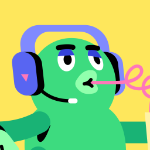

Lundi 16 mars 2026
Call hebdomadaire
 Harry
HarryLuc
 Marijn
MarijnYann
 Sylvain
SylvainValentin
Noah
 Romain
Romain Pierre-Louis
Pierre-LouisSyx
Zarathoustra
 Bob
Bob
Elyassmdev9
0:00 / --:--
Premier appel avec 3 nouveaux (Luc, Marijn, Yann) qui rejoignent le groupe. Le call a été dominé par le débat "marketing first vs product first", porté par Noah qui pousse tout le monde à sortir de sa zone de confort technique. Discussions approfondies sur l'attribution (SDK TikTok direct vs MMP), les stratégies TikTok (shadowban, authenticité, mascotte IA), la génération vidéo IA (SuperGrok, Eleven Labs), et une masterclass Reddit de Noah. Valentin propose un co-working virtuel sur Discord.
Participants
Harry — animateur du groupe, app d'affirmations positives "Punchlines" (76K€ en 2025)
Luc — nouveau, agence de dev + 2 SaaS B2C, basé à Bangkok, cherche son idée d'app
Marijn — nouveau, app de productivité IA avec sub-agents (Langfuse), a quitté son CDI en janvier
Yann — nouveau, app anti-porno (widget d'urgence), ex-trader, 4 enfants, reprend un job en Suisse
Sylvain — zéro code il y a 3 semaines, app "Gamify" désormais publiée, lance son défi 30 jours de contenu
Valentin — anti-to-do list IA, a survécu à un shadowban TikTok après 2 semaines d'organique, propose un co-working Discord
Noah — app blocage d'écran toujours bloquée par Apple, évangéliste du "marketing first", 580 waitlist en 3 jours en organique
Romain — abandonne le suivi de side-projects, pivote vers copycat app de blocage d'écran, découvre Claude Code + BMAD
Pierre-Louis — habit tracker pixel art en retard sur le planning, galère avec RevenueCat + builds EAS/Expo
Syx — jeu de cartes Android + SaaS RGPD, teste SuperGrok pour vidéos IA
Zarathoustra — app santé/longévité LyfPlus, 3 mois de TikTok régulier, la preuve que la persévérance paie (300→700 vues)
Bob — SaaS B2B finance/juridique, recommande BMAD pour prototyper
Elyass — app de motivation IA (citations), jour 35 du challenge 90 jours, pivote vers le marché français
1. Présentations des nouveaux
Luc
- Profil : Fondateur d'une agence de dev (tout délégué), associé sur 2 SaaS B2C. Basé à Bangkok.
- Approche : Copycat simple, iOS, marché validé. React Native (expérience existante).
- Vision : Automatiser au max avec l'IA — un "copilote" qui analyse les données et prend les décisions.
- Objectif : Trouver son idée d'ici la semaine prochaine.
Marijn
- Profil : Dev, a quitté son CDI en janvier. Utilise Langfuse pour monitorer ses agents IA.
- Projet : App de productivité boostée IA — décompose les objectifs en étapes, hooks psychologiques, sub-agents spécialisés (modèles open source low-cost).
- Statut : ~1 mois de dev, pas encore de marketing.
- Objectif : 5K MRR.
Yann
- Profil : Financier (ex-trader), au chômage depuis 18 mois, 4 enfants, Suisse. Reprend un job le 1er avril.
- Projet : App pour arrêter le porno — widget "bouton d'urgence" → exercices de respiration ou mini-jeux.
- Statut : En ligne depuis ~1 mois. Teste les carousels automatisés (OpenClaw), max 1000 vues.
- Objectif : 5K en 3 mois (fin juin).
- Citation : "Un bon marketer n'est jamais pauvre."
2. Tour de table des anciens
Sylvain
- App "Gamify" publiée et fonctionnelle, demande des retours au groupe.
- Lance un défi 30 jours de contenu court (problème de dos → habits → son app comme solution).
- Hésite entre YouTube et TikTok → le groupe recommande les deux + Instagram.
- Problèmes d'inscription micro-entreprise. Conseil : s'inscrire en "freelance développeur".
Romain
- Pivot : abandonne l'app de suivi de side-projects. Passe à un copycat app de blocage de temps d'écran.
- Commence à se filmer quotidiennement (journal vidéo YouTube, non partagé).
- Installe Claude Code + BMAD cette semaine pour brainstormer.
Valentin
- 2 semaines de contenu TikTok organique. Shadowban après 6 vidéos en une journée sur compte neuf.
- Vidéo de 7h de travail → 250 vues. Le compte doit "chauffer" avant de performer.
- Discussion attribution avec Harry : SDK TikTok direct vs MMP.
- Propose un co-working virtuel Discord en journée.
Pierre-Louis
- Pas beaucoup avancé (autres SaaS). Installe RevenueCat, galère avec les builds EAS/Expo.
- Objectif : version alpha sur les stores cette semaine.
Elyass
- App de motivation IA en ligne. Change de stratégie : passe de l'anglais au français.
- Challenge 90 jours (~jour 35), ralenti par des problèmes personnels.
3. Le grand débat : Marketing First vs Product First
- Noah : L'app est un détail. Commencer par valider le trafic avec du contenu. Copier les formats US qui marchent. "Vous allez réaliser que la philosophie n'a jamais été de faire une app."
- Harry : Rejoint Noah. "S'il y a de bonnes pubs, une bonne page App Store, un bon onboarding et un bon paywall, l'app n'a même pas besoin d'avoir un concept derrière."
- Valentin : Le marketing first est dur émotionnellement quand on est tech. Propose un entre-deux : contenu + prototype en parallèle.
- Yann : "Un excellent marketing et un produit médiocre bat l'inverse."
- Consensus : Le marketing est le nerf de la guerre. Le groupe est majoritairement tech et doit sortir de sa zone de confort.
4. Discussions techniques
React Native vs Swift
- Swift : workflow plus simple pour déploiement, SDK attribution, docs complètes.
- React Native : en attribution, "tu n'existes pas, tu n'as pas de doc".
- Règle : si tu as de l'expérience React Native, reste dessus. Sinon, Swift.
Attribution : SDK direct vs MMP
- Harry est passé de AppsFlyer → Tenjin → SDK TikTok direct. Ça fonctionne.
- Deux circuits : SKAN (toujours là, pas temps réel) + conversions temps réel (dépend de la pop-up tracking).
- Taux d'acceptation pop-up tracking chez Harry : 70%.
- MMP utile si multi-canal (TikTok + Meta + Snapchat).
Contenu TikTok
- Shadowban : ne pas poster trop sur un compte neuf (max 3/jour).
- La qualité du contenu prime sur la régularité, l'heure de publication, et toute autre stratégie.
- Zarathoustra : la régularité paie sur 3 mois, même avec des vidéos moyennes (palier 300 → 700 vues).
- Idée mascotte IA (style Duolingo) : Syx l'a testé pour son SaaS RGPD, ça décolle.
Génération vidéo IA
- SuperGrok (X / Elon Musk) : résultats bluffants, 30€/mois, quasi illimité. Recommandé par Syx.
- Eleven Labs : voix off IA ok mais pas encore naturel.
- Consensus : image/vidéo IA ok, mais les voix françaises restent un problème. Workaround : vidéo IA + musique + texte (sans voix).
Stratégie Reddit (Noah — ancienne app)
- Acheter un compte avec du karma (~8€), poster une success story authentique avec des vrais conseils.
- Intégrer l'app de manière naturelle ("des gens m'ont demandé, voilà le nom").
- Résultat sur son ancienne app : 100K vues, ~200-300€ de revenus sur un hard paywall sans free trial, pour ~5€ investis (le prix du compte Reddit).
- Limite : fonctionne en one-shot, pas sur la durée sur un même subreddit.
5. Outils et ressources
- SuperGrok : génération vidéo IA (X), 30€/mois
- Eleven Labs : voix off IA
- OpenClaw : automatisation carousels TikTok
- Langfuse : monitoring de sub-agents IA
- BMAD : framework d'agents Claude Code pour prototyper
- Plutus Media : chaîne YouTube marketing organique pour apps
- Contabo : VPS pas cher (~15€/mois) pour remplacer un PC
6. Actions et engagements
| Personne | Action |
|---|---|
| Luc | Trouver une idée d'app d'ici lundi prochain |
| Marijn | Se poser pour planifier, commencer le marketing |
| Yann | Passer aux vidéos montrant la feature live, tester TikTok Ads |
| Sylvain | Défi 30 jours de contenu, s'inscrire en micro-entreprise |
| Romain | Brainstorming BMAD pour l'app de blocage, commencer à coder |
| Valentin | 3 vidéos/jour TikTok + dev, organiser co-working Discord |
| Pierre-Louis | Alpha sur les stores cette semaine (RevenueCat + EAS) |
| Elyass | Nouveau compte TikTok français, reprendre à 100% |
| Noah | Documenter sa stratégie sur Discord |
Aucun résultat
Sylvain cadeau. alors il faut que ce soit directement intégré à ton propre storytelling quoi, et non pas sorti de nulle part comme ça en mode. télécharger mon app, aller trop bien,
Zarathoustra Ah oui, c'est le bot.
Luc il fait peur ce bot...
Sylvain et voilà, faut que ça soit naturel et logique. quoi je vois le...
Valentin | SiteXw il faut que ça soit naturel...
Zarathoustra Mais ça, ça passe par l'authenticité et l'échange avec la petite communauté que tu vas créer au début.
Sylvain problème c'est que tu gagnes pas d'argent avec une petite communauté 9 euros par mois il va te falloir au moins 300 mille abonnés...
Zarathoustra Ah,
Noah ah il amuse il...
Zarathoustra mais tu vas avoir plusieurs sources de revenus. Tu auras ton app, mais sur YouTube, c'est beaucoup plus tard que les choses viennent.
Noah faut bien commencer quelque part aussi...
Sylvain ok bah je mélange avec de la pub parce que il ya un contenu première maison qui devient viral c'est là où tu peux le promouvoir en publicité si je comprends bien ok...
Harry Salut les gars,
Valentin | SiteXw obligatoirement il...
Zarathoustra Oui, mais tu as raison. Bonsoir,
Sylvain oui...
Zarathoustra Harry. Mais en plus, il y a plein de nouveaux, Harry. Il faut cadrer le truc, parce que sinon on va tous parler.
Valentin | SiteXw voulait pas nous couper je pense il a fait un petit coucou léger mais on comment discuter une...
Harry je vous ai laissé, vous parliez quoi ? Business de l'influence ? Création de contenu ? C'était quoi le sujet ?
Noah c'est un peu le plein de c...
Zarathoustra C'était pour Sylvain.
Sylvain je me lance dans le marketing et j'aimerais bien avoir un avis en fait sur ma stratégie de contenu...
Zarathoustra Bonjour.
Harry Ok, tu veux refaire un petit topo là vu que j'ai raté le début ?
Sylvain oui, vite fait. je veux faire une vidéo par jour contenu court, pendant 30 jours en mettant un défi parce que j'ai un problème de santé. puis j'ai quelques habitudes que je veux mettre en place. et comme mon application allait lier un, permettre d'être la solution à ça, je me suis dit: bah, autant lancer le défi de, par exemple, de dire 30 jours, je retrouve un dos droit. et donc, comme mon application peut être lié à ça, et bien, je l'utilise comme solution. et du coup, bah, comme c'est la logique, j'en parle de temps en temps et ça me permet de vendre mon application en même temps. et puis, à la fin de ce défi 30 jours. je fais une vidéo longue où j'ai testé 30 jours x chose. voici ce qui s'est passé et je ramène tous les contenus courts sur la vidéo longue en fait...
Harry Ok, ok, ok je comprends. Ben ouais, grave, quel pourrait être le négatif de ce plan là ?
Sylvain c'est youtube ce que j'ai cru entendre que c'était tik tok qui était bien mais moi tik tok je connais pas quoi j'ai jamais été sur tik tok et j'avoue à scroller là toute la journée pour voir les concurrents s'il faut le faire c'est...
Zarathoustra En fait,
Siix et pourquoi pas les deux pourquoi pas les deux quand ta vidéo est faite tu peux aussi bien poster sur les deux et tu vois lequel marche le mieux...
Sylvain vrai parce qu'il y aurait même instagram aussi le problème c'est que j'aimerais bien renvoyer sur des vidéos longues...
Noah 'est...
Siix ok...
Zarathoustra ce que tu fais, c'est que tu fais tes jolies vidéos longues sur YouTube. Et après, tu utilises un petit outil pour faire des shorts. Donc déjà, tu fais des shorts sur YouTube parce qu'il adore ça. Et tes shorts, tu pourras les... Enfin, l'algo de YouTube aime ça. Et ces shorts, tu pourras les réutiliser sur Instagram et sur TikTok. Elles te ramèneront sur tes vidéos longues de YouTube.
Siix c'est comme des clips c...
Sylvain ok ok ok ouais parce que moi c'était surtout d'aller analyser tik tok ça me faisait chier pour être honnête alors en face il n'y a pas le choix le...
Zarathoustra On a tous été un peu comme ça au début, parce que je crois qu'on était tous non utilisateurs. Mais après, on s'habitue. Enfin, on n'a pas trop le cerveau qui est parti en veille, je crois. Mais il ne faut pas passer ses journées dessus, c'est tout.
Noah moi c'est parti en vie...
Zarathoustra Ah, ok,
Siix 'est...
Zarathoustra merde.
Sylvain mec il est tombé dedans c'est né c...
Valentin | SiteXw façon en tout cas ça coûte rien de une fois que tu fais un short ou enfin juste il faut que ça fasse moins de trois minutes parce que youtube short c'est trois minutes et après tu le publie sur les trois plateformes en même temps ça te coûte rien du tout le plus compliqué c'est de faire le contenu après juste publier x3 c'est c'est facile tu verras bien ce qui mord le plus il ya peut-être une ta communauté elle est peut-être un endroit et tu le sais pas encore mais...
Sylvain 'est vrai c'est vrai la tête percée sur tik tok et je me rends compte ouais en fait final tik tok c'est trop bien...
Siix ça de toute façon une fois que tu as fait tes vidéos en fait c'est le plus dur après les poster x ou y ça reste le plus simple mais le plus important c'est que tu aies fait tes vidéos...
Sylvain marche et j'ai posté du coup mon application. donc, ceux qui veulent donner un avis, n'hésite pas, voilà. merci, gami, gamifi ou gamifai. normalement, je trouve que c'est gamifi parce que, du coup, c'est i,
Siix c'est quoi gamify c'est ça ok ouais gamify c'est un i ouais ok ok...
Sylvain je pouvais pas mettre gamifi, ça n'existait pas. et puis, je n'ai pas trouvé d'autres noms. parce que gamification, je fais gamifi et c'est bon, ça passe c...
Zarathoustra Moi, j'ai cliqué dessus, ça marche bien. Mais du coup, tu sais, je n'ai pas voulu m'inscrire. Et en fait, je ne comprends pas.
Sylvain 'est pas obligé non...
Zarathoustra Ouais, mais du coup, après, je ne comprends pas. Quand je vais revenir dessus, ça va me remettre à zéro, non ?
Sylvain parce que ça crée sur soupe à base un compte fantôme et lorsque tu crées un compte après, ça transforme le compte fantôme en compte de ton compte avec ton email...
Zarathoustra Ok, ok, d'accord.
Valentin | SiteXw on...
Zarathoustra Mais il faut pousser un peu les gens à payer aussi, parce que là, du coup, tu laisses les gens utiliser.
Sylvain ainsi peuvent pas payer parce que il y aura non excuse moi il ya certaines fonctionnalités qui sont payantes donc quand il va vouloir les activer ça va marquer là ça va mettre la page paywall et il va être obligé de payer une version gratuite une version payante mais sur l'onboarding c'est vrai que l'onboarding j'ai dû le faire vite fait parce que j'ai testé un un onboarding interactif et si c'est nul faut me le dire parce que c'était une galère mais sans nom...
Zarathoustra Non ? Non, mais déjà, ce qui va bien, moi, j'aime bien le design, c'est les purées,
Siix ouais le design est pas mal...
Zarathoustra les petites icônes, elles sont sympas.
Sylvain à soyez pas gentil par contre si c'est nul vous me le dites à moi y'a aucun souci et moi je passe à autre chose sinon non...
Siix écoute je découvre là en même temps que tu parles mais j'aime bien le design à première vue j'aime bien moi...
Valentin | SiteXw est d'accord que lundi dernier tu avais rien du tout j'ai un petit doute c'est t'avais pas d'expérience en code c'est ça à pardon j'ai confondu avec je sais plus qui désolé ok d'accord ça marche...
Sylvain c'était il ya deux mois j'avais aucune expérience en code j'ai commencé le 10 janvier on va dire c'est quand j'ai découvert harry et voilà j'ai découvert harry je me suis ça de trop intéressant je vais tester ça...
Zarathoustra Et une question pour Harry, pourquoi il y a beaucoup de gens qui sont arrivés depuis deux semaines ? Est-ce que c'est toi qui as fait une promotion ? Est-ce qu'il y a une mise en avant, juste l'algorithme ?
Noah ok...
Siix non oui il a fait une page il a fait une page et tout...
Harry Non, j'avais fermé les... En fait l'accès au groupe était fermé depuis un certain temps là déjà, et j'en parlais pas à personne quoi.
Zarathoustra Ok,
Harry Et juste j'ai remis en forme un peu tout ça, puis j'ai envoyé un mail, et puis voilà, du coup il y a des gens qui...
Zarathoustra ok. Mais c'est bien, parce que c'est déjà plus... Parce que moi, ce que je me souviens, dans la saison 1, si on peut dire ça comme ça, c'est qu'on avait été très rapidement, il y avait des gens qui ne venaient pas dans les lives, et on s'était retrouvé à 6-7, ce qui était très bien. Mais là, j'ai l'impression que les gens sont plus motivés.
Harry ont commencé à se connaître tous par cœur, donc ouais, effectivement. Sylvain, c'est où que t'as publié le lien de ton app ? C'est vrai que je l'ai pas vu là. Ah ok, dans la discussion ici là ?
Garen Hervé et repartagé dans le...
Sylvain mais dans discussion...
Zarathoustra C'est dans les...
Siix dans discussion ouais,
Harry Ah oui, c'est bon que je l'ai. Ok,
Siix ouais et d'ailleurs, Sylvain,
Zarathoustra D'ailleurs, je pense que...
Siix petite question: tu l'héberge ou là ton app à l'heure actuelle..?
Sylvain sur, m'en voulez pas, s'il vous plaît, s'il vous plaît. google est studio, parce que je n'ai pas encore déployé, j'ai pas encore déployé.
Siix ouais ok c'est bien s'il me semblait ok ok...
Valentin | SiteXw très bien très bien très bien c...
Sylvain en fait, j'ai un cram book et je peux pas avoir anti gravity cursor. alors il y en a qui vont me dire: mais si tu peux, parce que faut bidouiller, mais moi je sais pas bidouiller, donc il va falloir que j'ai un autre ordinateur, parce qu'apparemment, ok...
Siix alors t'as pas besoin d'un autre ordi. par exemple, si t'as 15 balles, tu prends un vps avec windows, un truc avec 16 Go de ram, ça va te coûter 15 balles par mois et du coup, tu peux lancer anti gravity, etc. dessus et tu peux même le piloter à distance. donc voilà, si jamais t'as pas les moyens d'acheter un pc maintenant avec 15 balles, tu peux faire ça. tu vas sur comptabo, c'est comptabo.com, t'as les vps dessus et c'est fiable, c'est carré, c'est clean...
Sylvain ok ok... alors je voulais tester, d'abord faire un mvp, tester si ça me plaît de faire une app, si ça me plaît aussi de le vendre. et puis, si ça me plaît, bah écoute, je passerai sur anti gravity, tout simplement. non,
Zarathoustra Mais tu as utilisé quoi, Cursor, pour faire ton app ?
Sylvain google est studio. bah,
Siix mais pourquoi anti gravity ?
Zarathoustra Ah oui, ok, d'accord.
Siix je comprends pas enfin pourquoi tu parles d'anti gravity ?
Sylvain parce que je suis sur gemini, je me dis: c'est sûrement gratuit, gemini, sur anti anti gravity, pas sur curseur, vous payez tous les tokens comment...
Siix ouais ouais ouais ouais...
Valentin | SiteXw 'est vrai que gemini, c'est gratuit dans une certaine limite. mais oui, tu peux, moi, je l'ai beaucoup utilisé à une époque en mode, dès que tu es un peu en mode, ra,
Sylvain je paye rien du tout.
Valentin | SiteXw bah voilà, mais tu as raison, sérieusement, si tu atteins pas les limites, enfin, fais pas plaisir,
Sylvain il faut y aller, mais j'ai des. maintenant, ils ont réduit...
Valentin | SiteXw peut-être, peut-être, mais c'est vrai que c'est bien, tu. enfin, moi, j'ai eu d'accès au modèle, au dernier modèle direct, parce que c'est un peu un truc. en en early access, on va dire: c'est fait pour les tests, quoi ça m'assiste. si tu arrives à faire ta ta vie dessus, fais le, t'as raison. bah,
Harry en mode... Les...
Garen Hervé anti-gravity c'est le cloud code de Gemini c'est ça ? c'est le codex un peu ok...
Valentin | SiteXw je crois que c'est encore un autre différent,
Siix pas vraiment en vrai. ouais, c'est autre chose. ouais,
Valentin | SiteXw mais c'est pas si éloigné. au final, je mets. j'avoue, j'ai du mal à comprendre, mais..
Siix c'est pour ça que je te demandais: en gros, ça te permet de faire des agents? euh, ça te permet de faire plusieurs agents, etc. des orchestrés ensemble et tout. donc, c'est un peu différent. ouais, c'est. ah oui, bien sûr, ouais, c'est orienté dev, ouais, ouais, ouais, mais c'est différent,
Valentin | SiteXw c'est orienté le développement quand même non c'est quand même pour ça j'ai du mal à comprendre leur ah...
Siix c'est un peu différent de curseur et tout, mais...
Garen Hervé il trouve ça va un peu à faire une solution pour concurrencer cloud code ou codex...
Valentin | SiteXw ouais mais ils ont déjà sur en tout cas sur vs code là je l'ai installé parce que j'ai un moi j'ai pris un compte gemini là gratuit pour fin bref en en thèse pour avoir des crédits pour les vidéos il ya enfin bref j'ai testé en vs code leur truc et putain l'extension à les noter genre 2,5 sur 5 bon moi ça fonctionne j'ai pas eu de souci et tu sens que c'est pas au niveau de encore des autres quoi donc ils ont encore du travail à faire de ce côté quoi sur leur petite interface bref mais...
Siix après pour un...
Zarathoustra Après, honnêtement, par exemple, Sylvain, ce qu'il a fait, c'est bien, et si ça lui convient, on ne va pas lui dire,
Valentin | SiteXw c'est pour ça oui...
Zarathoustra ah non, il faut absolument que tu ailles sur ça ou ça.
Siix ouais ouais c'est clair...
Garen Hervé oui c'est clair...
Zarathoustra Il y a trois chapelles, il y a Codex, Cloud Code, et Gemini, du coup, avec Antigravity, et il faut reprendre la solution qui vous convient le mieux.
Siix ouais c'est ça...
Sylvain après c'est qu'il ya certainement des il ya certainement des fonctionnalités que je connais pas sur curseur que moi j'ai pas sur google est studio forcément puisque c'est une plateforme professionnelle parce que moi je me rends pas forcément compte ça se trouve il ya ce truc que je fais mais je galère alors que ça se trouve sur curseur ça serait très tellement simple dit...
Zarathoustra De toute façon, vous serez alerté.
Siix ça dépend,
Zarathoustra C'est possible. Mais après,
Siix faudra un cas concret ouais...
Zarathoustra l'outil que tu as utilisé, c'est plus justement, comment dire, pouvoir démarrer très rapidement. Donc forcément, tu peux faire normalement, j'imagine, moins de choses. Mais par contre, tu as pu sortir un truc très rapidement. Donc, c'est toujours pareil. Ce n'est pas forcément les mêmes buts.
Sylvain donc je peux au moins balancer du code comme je peux faire sur curseur mais sur curseur il ya l'espace 2 moi je connais pas commande ou je sais plus trop quoi moi j'ai pas ça moi oui...
Garen Hervé ouais...
Valentin | SiteXw c'est normal. en fait, ai studio, c'est comme chat gpt dans le sens où tu as une interface, tu chat directement. on est d'accord, c'est ça,
Sylvain c'est ça et j'ai l'espace voir tout mon code...
Valentin | SiteXw ouais. ok, d'accord, ouais, ce qui est pas si éloigné que ça au final, mais c'est peut-être plus orienté de chat qu'orienter, comme c'était vraiment un ide de développement, comme cursor ou vs code. je pense que c'est peut-être juste ça au final, la différence, mais bon, bref, en tout cas, si tu y arrives en l'état, reste comme ça, on te prend pas la tête, mais...
Noah et du coup valenfant...
Harry gars, j'ai envie de vous proposer un petit... une petite structure, parce que j'ai l'impression que sinon on va juste passer de petite anecdote en petite anecdote pendant deux heures. Ce qui est très bien aussi, et c'est ce qu'on faisait quand on était six, et c'était cool. Là je me dis, histoire de laisser de la place un peu à tout le monde, ou juste cadrer un minimum, est-ce que ça vous dit de faire un petit... un petit tour de table, juste rapide, genre savoir où est-ce que chacun en est, est-ce qu'il y a des blocages, ou des victoires, ou même des problèmes que quelqu'un rencontre, bref. Ça vous dit ?
Sylvain oui mais oui vas-y...
Valentin | SiteXw non était...
Siix let's go...
Harry Ok, ok. Ok, ben, commençons par... J'ai vu qu'il y avait des nouveaux aussi là, ce soir. J'avoue que je commence à avoir du mal, parce qu'il y avait déjà des nouveaux la semaine dernière. Là, les nouveaux, des nouveaux. Je crois que Luc t'en fait partie. Luc, t'es là ?
Luc oui oui oui je suis là ça...
Harry Ok, ça va, c'est pas trop tard pour toi, je crois que t'avais dit dans le Discord que c'était tendu un peu, 20h30.
Luc va, j'ai fait une nouvelle technique de sommeil. donc là, on est pas mal. mais oui, il est quasiment trois heures chez moi. c'est pour ça. mais en vrai, je pense qu'avec la technique, ça devrait bien se passer. la technique, c'est de dormir un peu avant et un peu après.
Harry C'est quoi la technique ?
Luc je suis à bangkok. là, je suis en asie, donc c'est plus 6 comparé à la france...
Harry Ok, ok, t'es motivé, mais tu vis où, toi ? Ok, ok, je vois. Ouais, ouais, donc tard ici, c'est très tard chez toi.
Luc ouais, c'est ça. d'où le fait que j'ai dit: ouais, 20h30, si jamais on peut réduire un petit peu à 18h30. mais ouais,
Harry T'as tenté, t'as tenté. Du...
Luc c'est ça chacun. mais ouais, du coup, moi, je suis arrivé semaine dernière en même temps que les autres pensent: enfin, les nouveaux, quoi, je fais partie des nouveaux, finalement, et moi, je suis coup. je suis au tout début dans tout ce qui est app mobile B2C. donc là, autant vous dire que je n'ai même pas d'idée. c'est à dire: voilà, j'explore, mais c'est, mais c'est intéressant et le but, c'est juste de trouver une idée et, pour faire très simple, de faire le plus rapidement possible le tour, quoi, c'est le plus rapidement possible, faire design, développement, mettre sur les stores et faire de la publicité. mais enfin, pas de la publicité, forcément des ads,
Harry marketing,
Luc mais faire, ouais, voilà du marketing, distribution le plus rapidement possible pour vite faire la fameuse boucle. en fait, pour que j'y taire rapidement, juste faut que je ah...
Harry qu'est-ce qui t'a fait penser que c'était faisable et motivé à démarrer là-dedans ?
Luc oui, putain, c'est vrai que j'ai même pas, je me suis même pas présenté. bah, en fait, pour faire simple, là, actuellement, je j'ai une agence de développement où on prend des projets au forfait, mais tout est délégué, c'est à dire designer, développeur, et j'ai des product managers qui sont en freelance, et enfin, tout est, tout est géré. donc, ça c'est ok, c'est de ça dont je vis. à côté de ça, j'ai deux sas, sur lequel je suis associé, qui sont des sas B2C, qui font un peu d'argent, c'est à dire qu'ils font quelques centaines de MR par mois, et, avec nos associés, c'est censé monter. enfin, c'est le but, mais j'ai pas la main sur tout, j'ai pas des décisions sur tout, parce que, en gros, à chaque fois, bah, en fait, quand t'es associé, t'as toujours ce truc d'associé. ou bah, en fait, ouais, t'as pas la main sur marketing, forcément, sur la description, sur ce qu'on va faire, etc. je suis un peu le CTO dans les deux cas, et du coup, l'app mobile, c'est un peu ce truc de, en fait, j'ai la main sur tout, j'ai 100% accès à tout, que ce soit le développement, enfin, ça, évidemment, mais aussi la distribution, le marketing sur l'analytique, etc. et la take que j'aimerais prendre et qui est très simple: après avoir, ça se trouve, ça marche pas du tout et je me casse la gueule, c'est de comprendre, parce que je pense que sinon, ça marchera pas, mais de comprendre comment on peut faire un petit peu d'argent rapidement avec une mobile 8 aussi, et après de d'essayer au maximum d'automatiser tout ce qui est automatisable par IA. exemple très simple: le support, c'est automatisable par IA, l'analytique pareil, et ce serait brancher finalement, pour faire très simple, toutes les datas sur un énorme cloud code, enfin, un énorme cloud qui prennent une décision et qui me disent: bah là tu vois, Luc, que tu fais n'importe quoi, parce que les utilisateurs, ils veulent cette feature, et c'est pour ça qu'un churn qui est trop haut et en même temps, ton truc, il est mal branché, donc, ton taux d'attribution il marche pas, parce qu'en fait, tu n'as pas fait XRXZ et voilà, bon, en gros, c'est ça la take,
Harry T'as ce rêve d'avoir un copilote, un copilote IA qui t'aide à prendre des décisions, c'est ça ? Ça...
Luc ouais, ouais, alors, ça, je suis sûr que, enfin, ça, c'est déjà le cas, mais c'est juste à savoir jusqu'à quel niveau on peut aller pousser la chose.
Harry peut aller ? Ouais.
Luc ouais, c'est ça. et après, le but, c'est de faire en fait, c'est d'aller sur un, c'est d'aller dans une niche qui existe déjà, avec des concurrents qui existent déjà, et de faire quelque chose, enfin, une app qui n'est pas compliquée à faire, qui est assez simple finalement à faire et juste d'aller me casser les dents là dessus et après, plus tard, ça marche. pourquoi pas faire une étape? voilà donc un peu. c'est ça le, c'est ça le but...
Harry Ok. Ok, ok, ça marche. Et là, les premières explorations, avec les quelques trucs que t'as piochés sur le Discord, t'as trouvé des idées, t'as commencé à chercher, t'as mis en place ne serait-ce que le petit raccourci qui permet de voir les revenus des apps.
Luc ouais, j'ai mis en place, je sais plus, je crois que c'est Pierre-Louis qui me l'a donné, et après, là, effectivement, je me suis fait, j'ai, j'ai eu la même idée que que je sais plus comment. il s'appelle Lio Livio, je sais pas s'il est là. bref,
Harry Livio,
Luc ouais,
Harry il est pas là. Livio Files.
Luc Livio, ouais. donc, j'ai fait la même chose, j'ai partagé le document et je suis en train de regarder un peu tout ça et après, le but, c'est effectivement de trouver une idée. et c'est bien parce qu'il y a globalement pas mal de choses pour aller chercher une idée, aller chercher une niche, valider un marché et après, dès que j'ai validé un marché, je pense que je le posterai ici pour que les gens me disent: ouais, Luc, il y a moyen que ce soit une bonne idée ou non. vraiment, n'y va pas histoire d'avoir un minimum de feedback. et et voilà, et après, oui, j'aimerais comment...
Harry Un truc dont on n'a pas parlé, j'y pense pendant qu'on parle de ça, de la recherche d'idées. Un truc dont on n'a pas forcément tellement parlé, je pense, jusqu'ici sur le Discord, mais c'est ne serait-ce que se promener sur les réseaux et voir des pubs d'app. En fait, quand tu vois une pub d'app, c'est vraiment bien parce que t'as le début du tunnel. Parce que des fois, tu vois une app qui fait plein d'argent, mais t'as aucune idée de comment est-ce qu'elle fait pour trouver les gens. Et quand t'es sur les réseaux, notamment Instagram, je trouve que sur Instagram, il y a énormément de pubs d'app. Enfin, en tout cas, sur mon algo à moi, j'en ai beaucoup. Et en fait, t'utilises le raccourci là-dessus, tu vois, tu cliques sur la pub, t'ouvres la page App Store, tu regardes vite fait combien l'app elle gagne. Et en fait, ça te donne tout de suite une idée de, ah ok, cette petite pub là, de rien du tout, qui durait 5 secondes et qui avait l'air toute innocente, en fait, derrière, il y a un empire à 2 millions par mois. Et ça, c'est une bonne façon de trouver des idées, je trouve, parce que c'est très ancré avec l'ici et maintenant. Et puis, en plus de ça, les pubs que tu vois, elles sont souvent en rapport avec des trucs que toi, t'aimes plus ou moins bien.
Luc après,
Harry Donc, ça peut être une bonne technique, ça.
Luc est ce que j'ai besoin d'être l'ICP, enfin d'être mon client de ma propre app? c'est ça la question aussi, ouais..?
Harry Non, pas nécessairement, mais ça aide. Ça aide parce que ça te permet de comprendre un peu mieux le client.
Luc évidemment ok et ça marche vraiment ce...
Harry Parce qu'il y a quand même une grosse part de psychologie, tu sais, surtout si tu fais une app qui aide les gens sur un truc qui n'est pas juste un outil, tu vois, mais qui est un peu dev perso, un peu j'ai envie de devenir une meilleure personne, etc. Là-dessus, t'as besoin de t'attaquer à la psychologie, quoi. Alors, t'es vraiment en mode, je te comprends, je parle les mêmes mots que toi, etc.,
Luc donc donc,
Harry etc.
Luc par exemple, une app pour arrêter le porno? bah, ça serait une app intéressante. quoi? en général,
Sylvain vas-y déjà...
Harry Ouais, ça pourrait.
Luc ça vise plus les hommes qui sont frustrés sexuellement.
Harry Ça existe déjà, effectivement, mais c'est pas grave.
Luc comment justement...
Sylvain un exemple si tu veux il y en a une américaine qui existe...
Harry Et Sylvain disait que ça existait déjà, mais en vrai, c'est pas du tout grave. Oui, justement, c'est bien. C'est bien que ça existe déjà.
Luc justement non mais c'est même intéressant heureusement j'ai pas envie de faire une app qui n'existe pas comment...
Sylvain oui, oui, c'est ce que je voulais dire, c'est que, du coup, il ya déjà des concurrents et ça fonctionne très bien.
Harry Ça s'appelle Quitter, l'app.
Sylvain ouais,
Harry Ouais.
Sylvain c'est ça là...
Luc ça s'appelle Twitter...
Harry Mais je... Ouais, Quitter. Mais je sais pas s'ils font autant d'argent qu'à l'époque, vu que ça fait partie de la clique de AppMafia et tout, qui est un peu en déclin ces derniers temps.
Noah j'ai vu ils ont une fuite de données il n'y a pas longtemps...
Harry Je trouve que c'est un peu parti en cacahuète, là, leur groupe.
Luc juste par rapport au raccourci que tu me parlais Harry c'est un raccourci qui estime les revenus ou comment ça marche est ce que c'est vraiment fiable...
Harry En fait, t'as plusieurs sites qui permettent d'estimer les revenus.
Luc ok...
Harry Et concrètement, le raccourci, il se branche sur l'un de ces sites, que ce soit via API ou via je ne sais quel... Enfin, selon le site, on se branche à un truc et tu récupères l'info du revenu estimé. Et souvent, ce revenu estimé, il est vachement proche de la réalité. Enfin, moi, par exemple, quand j'avais dépassé les... Quand j'étais sur les 25 000, là, sur le mois de revenus, c'était à peu près ça, quoi. Ça avait suivi mes revenus. Donc,
Luc ok donc c'est assez...
Harry je sais pas sur quoi ça se base. Au début, je me posais beaucoup la question, est-ce que c'est vrai, c'est pas vrai, machin. Ça a l'air d'être plutôt réaliste. Je pense qu'il y a peut-être 20-30% de marge, mais globalement, c'est à peu près ça.
Luc ok et donc toi qui du coup ça doit faire on va dire globalement un an que tu es dedans si tu devais repartir de zéro comme là où j'en suis finalement qu'est ce que tu ferais très rapidement...
Harry La première étape, c'est de trouver une idée qui te plaît. Donc, ça, je sais pas si je... Enfin, moi, par exemple, j'avais besoin de trouver une idée avec laquelle je raisonnais, tu vois.
Luc c...
Harry Donc, il n'y a pas vraiment de conseils pour ça, à part cherche bien, quoi. À part les petites techniques, genre... Quand tu vois une pub, analyse l'app qu'il y a derrière. Quand tu te promènes sur l'appstore, analyse les revenus automatiquement. Et fais-toi une liste et commence à trier. En gros, il y a deux gros critères. C'est la facilité à créer l'app. Donc, plus c'est facile, mieux c'est, forcément. Et l'autre critère, c'est le potentiel de succès. Donc, à quel point est-ce qu'il y a des concurrents qui se mettent bien ? Et si t'arrives à avoir les deux curseurs au max, genre un truc pas trop compliqué à faire, et qu'il y a des concurrents qui se font plaisir, c'est bon, t'as trouvé un bon alignement de planète. Ah oui, mais il y a un troisième élément, c'est celui-là auquel je pensais, c'est à quel point est-ce que toi, ça te fait plaisir de travailler là-dessus, quoi. Parce que, tu vois, si tu commences à aider les femmes de plus de 50 ans à faire du crochet,
Luc 'est clair, c'est vrai, j'avais pas pensé à ça,
Harry je ne sais pas si tu vas kiffer ton quotidien, tu vois. Mais on leur passe le bonjour,
Luc mais naturellement,
Harry quand même.
Luc je pense pas que je serais allé vers ça. ok...
Harry Ça ne m'étonne pas.
Zarathoustra Il y a aussi, si tu cherches des idées, parfois, tu peux aussi demander au LLM que tu utilises des marchés où des applications sont pas mal utilisées, mais qui ont des vieux design, ou alors les gens se plaignent. Et tu peux retrouver ça sur Reddit aussi. Et je n'ai pas d'idée en tête, mais des fois, ça fait remonter des business où les gens seraient bien contents d'avoir la même application, mais plus jolie.
Luc à...
Garen Hervé par exemple ça me fait penser à Bitika, moi, c'est un peu ce que je refais. donc, une application de suite, d'habitude gamifiée, tu te donnes l'app, putain, c'est austère, c'est vraiment le mot austère,
Luc ce point là ok...
Garen Hervé donc c'est vraiment basique. c'est pas très beau. donc moi, j'ai vraiment poussé le truc, donc ça prend beaucoup plus d'énergie, c'est sûr, et je comprends pourquoi ils l'ont pas fait. mais je ne réinvente pas la roue.
Harry Mais il y a un marché.
Garen Hervé mais voilà déjà il y a un marché. mais surtout, il y a des gens, et surtout j'ai des proches qui avaient déjà utilisé des applications qui disaient: ouais, mais ça m'a pris trop de temps juste à utiliser l'app, mais si l'app était mieux faite, je l'aurais utilisé...
Luc ok ok...
Harry Moi, j'ai aussi un exemple à donner, là, très récent, c'est que hier, je faisais pas mal de route en voiture, et j'ai commencé à écouter un livre audio de Fabien Olicard, qui s'appelle « Un truc sur le temps ». Ce livre vous fera gagner du temps. Donc, j'écoute le livre, et en fait, à un moment, il parle de la matrice de Eisenhower. Vous savez, c'est cette espèce de cadran avec quatre parties. Il y a importance sur un axe et urgence sur l'autre axe. Et donc, vous avez des trucs importants et urgents, importants et pas urgents, pas importants et urgents, et pas importants et pas urgents. Et donc, l'idée générale, c'est de classer vos tâches, plutôt que d'avoir une seule to-do liste, de tout de suite les ranger, les trucs que vous avez à faire dans le cadran. Et puis ensuite, il y a toute une philosophie autour de ça, c'est un truc qui est abordé dans plein de livres, etc. Bref. Et là, il en parle d'une façon où ça a l'air d'être la solution, quoi. C'est la solution. Et ça m'a donné envie de mettre en place le truc. Et mon premier réflexe, c'était de voir s'il n'y avait pas une app, quoi. Donc j'ai tapé Eisenhower, machin. Et puis, en fait, j'ai tombé sur des... Au début, j'ai fait la recherche sur l'App Store du Mac. Et il n'y avait que des trucs tout pourris. Vraiment tout pourris. Il y avait quatre apps qui se battaient en duel. Des trucs avec un avis, un truc où c'était écrit en chinois. Enfin bref, je me suis dit, ah ok, en fait... En fait, il n'y a personne, tu vois. Après, sur mobile, je n'ai pas regardé. Mais en tout cas, voilà. Il y a toujours des besoins qui traînent comme ça, quoi. Il suffit qu'il y ait un petit mot comme ça qui revienne à la mode. Tout le monde parle de la matrice à gauche, à droite. C'est la solution pour gagner du temps, machin. Et bah, bim. Tu peux arriver là-dessus au bon moment, tu vois.
Luc ok... après, j'avoue que pour ma première app, j'étais plus parti sur un bon copycat avec des concurrents et un angle différenciant à minima. parce que, sinon, oui, c'est juste copier, ça sert à rien. enfin, d'autre façon, les gens viendront pas chez toi plutôt que d'aller dans un marché. ou comment dire où c'est pas sûr, ou ginov, etc. ça, j'avoue que ce sera peut-être dans un second temps, mais ça sera pas pour la première app en tout cas, mais ok donc...
Harry Ouais, bah je pense que c'est safe, t'as raison. Et puis, le trajet sera moins aride. Quand t'es en train d'avancer et que tu sais pas si ça va fonctionner. Vu tous les efforts que ça demande, c'est quand même un peu... Un peu angoissant des fois. Ou décourageant plutôt.
Luc parce que toi, au final, tu avais pris une idée, mais tu avais checké qu'il y avait déjà des concurrents, etc. donc je..: vais faire la même chose.
Harry Oui, oui, il y avait déjà des concurrents. Tout était validé. Je savais que ça allait marcher. C'était juste une question d'exécution, en fait.
Luc j'aimerais trouver mon idée d'ici la semaine prochaine. comme ça, c'est fixe.
Harry C'était parti. T'as une deadline ou pas ?
Luc merci beaucoup...
Harry Ok. Bon, bah, force à toi. Bienvenue dans le groupe, en tout cas. Et nous continuons le tour de table. À moins que quelqu'un veuille intervenir. À propos de... De Luc.
Noah non non c'est bon mais Luc je pense que je t'enverrai un DM et je te parlerai en plus en détail je pense qu'il y a des trucs qui peuvent t'intéresser surtout si tu me fais un copycat mais je t'enverrai...
Luc avec plaisir...
Sylvain où je souligne vraiment ce qu'il a dit c'est de choisir le plus simple possible parce qu'on se rend pas compte du travail qu'il ya à faire en fait on se dit oh ça va être simple de faire ça puis tu te rends compte que deux mois après est passé et puis tu as toujours pas terminé quoi...
Luc justement je veux éviter ça...
Siix surtout quand tu vas te rendre compte que le marketing est limite plus important que ce que tu viens de faire tu vas dire merde...
Luc j'ai beaucoup, beaucoup développé, notamment sur de sas, et là, le seul truc que j'ai envie de faire, c'est d'avoir une nappe très simple, qui est bien honnêtement d'ailleurs, je me pose la question parce que vous vous posiez la question dans le groupe entre react native, native, pardon- et swift, sachant que j'ai déjà fait beaucoup de react native et j'ai jamais fait de swift, mais vu que je veux faire que du ios en i, parce que je vais là où l'argent est et que je vais pas m'embêter avec android, du coup vous partiriez sur swift, j'imagine.
Sylvain carrément en plus...
Luc est ce que c'est vraiment un vrai bien ou est ce que c'est anecdotique en fait, finalement..?
Sylvain acte native expo...
Harry Je trouve,
Noah ça c'est un peu en détail...
Harry il y a le fait que là, t'as dit que t'avais de l'expérience sur React Native. C'est le truc qui... En fait, si t'as d'expérience avec rien, pars sur Swift. Par contre, si t'es déjà à l'aise avec React Native, la question se pose. Mais j'avoue, j'ai pas de réponse toute faite pour ça. Je sais pas.
Valentin | SiteXw ça, si son dev en quoi avec react? oui,
Luc ouais ouais bah ça dépend de ça dépend de sas mais ouais...
Valentin | SiteXw non, mais voilà, t'as déjà de l'xp dessus. sérieusement, on te prend pas la tête, tu rajoutes pas des des problèmes supplémentaires. react native, je pense, ça ira tout seul. à mon avis, si t'as fait du react, je vois pas de. je vois que non, pas de difficultés, mais d'autant plus.
Luc oui oui après c'est maintenant c'est l'lm qui code je ne connais plus...
Valentin | SiteXw tu vois, mais oui, mais au moins tu comprendras encore mieux ce qu'il fait. tu vois, tu pourras valider assez rapidement ce qu'il fait quoi...
Harry Je sais pas s'il y a des gens qui ont eu l'expérience ici, là, de faire du Swift de zéro, full cloud code,
Luc ouais...
Harry sans vraiment savoir ce qui se passe.
Zarathoustra Oui. Oui,
Luc justement du coup...
Noah ouais moi je fais ça moi je fais ça sur deux apps il n'y a rien à tirer juste le liac et tout...
Zarathoustra mais j'ai testé.
Harry Alors, Noah... Ouais, Noah ? Ok.
Luc ça marche bien ça c'est la question non parce que est ce que ça se voit vraiment en...
Harry Mais après, le truc, Noah, c'est que toi, t'as pas encore été dans des conditions avec plein d'utilisateurs en prod pour de vrais et tout.
Noah je ne vois pas trop le problème. ça,
Harry Tu vois pas pourquoi y'aurait un problème, ouais ?
Noah c'est plus des ça, c'est plus des gardes de bac pour scaler. après là, j'ai tout ce qui est problème de bug. je trouve que ça se règle juste en balançant à plein d'utilisateurs en mode test et j'ai reçu beaucoup de bugs là dessus.
Harry Ok.
Luc imprompte...
Noah enfin, je ne sais pas, je n'ai pas rencontré de problème...
Harry Et écoute, Luc, fonce. Zara Tussara, t'allais dire un truc ?
Zarathoustra Ouais, moi j'avais essayé, je vous avais teasé il y a deux semaines une app, et du coup, j'avais fait avec Swift. Finalement, j'ai laissé le projet tomber, mais c'est intéressant. Enfin, Cloud Code est assez à l'aise avec. Pour Build, ça va beaucoup plus vite. Et ouais. Non, j'ai survolé un peu le langage, je l'ai trouvé assez... C'est comme c'est des langages récents, ils ont appris des vieux langages. Donc, c'est quand même... C'est pas mal. Ça dépend si tu veux te lancer un défi technique ou pas.
Luc mais je vais aller vers la facilité react native c'est très bien je pense que react native il ya plus d'app en react native que en swift bon j'avoue que c'est une take un peu risqué j'avoue je suis même pas sûr mais est ce que l'lm sont pas meilleurs sur react native je pense que si...
Harry Là... En vrai, c'est pas tellement le code, moi, je trouve, qui est... Enfin, les fonctionnalités pures de ton produit seront pas vraiment la problématique, que ce soit en React Native ou en Swift. Par contre, là où je trouve que c'est plus simple en Swift qu'avec React Native, c'est surtout ce qui est déploiement, tout ce qui est SDK pour l'attribution, ce genre de conneries qui t'arrivent après, en fait, à la fin.
Luc ah...
Harry Je trouve que le workflow avec React Native est plus lourd, quoi. Plus lourd, plus semé d'embûches, plus chiant, en fait, tout simplement. Ne serait-ce que... Enfin, en fait, l'attribution, c'est le pire des cauchemars, par exemple, en React Native. Alors qu'en Swift, t'as une doc bien propre. En React Native, on te calcule même pas, quoi. T'existes pas, t'as pas de doc, démerde-toi.
Luc ouais c'est vrai ça ah ouais parce que là c'est un vrai sujet ah...
Harry Bah ouais, ouais, tu te retrouves à être... Bah, tu te retrouves... Bah, moi, par exemple, je suis en React Native, et j'utilise un wrapper qui utilise le SDK officiel à travers un plugin qui, du coup, ajoute ce qu'il faut dans le projet Swift derrière. Mais en fait, c'est bancal. Genre, je sens que c'est bancal. Et puis, en plus de ça, dans la doc de ce qui est... Dans la doc du truc en React Native, il y a plein de trucs qui manquent. En gros, j'ai été obligé, pour que ça fonctionne, de regarder la doc Swift. Pour m'adapter comme je pouvais. Et c'était vraiment galère.
Luc ouais... ok...
Noah mais même la doc Swift, c'est bancale. j'étais en Swift et c'était quand même une grosse galère. c'est plus de la galère en fait.
Harry C'est toujours de la galère, alors, l'attribution.
Valentin | SiteXw mais t'as utilisé quel prestat harry le mmp c'est le c'était up fly up flyer branch adjust...
Luc ok...
Noah tu ne veux pas y échapper...
Harry C'est quoi ton MMP ? J'ai testé AppsFlyer, et puis ensuite, je suis allé sur Tenjin. Mais là, maintenant, aujourd'hui, je suis juste avec le SDK de TikTok. Je trouve que c'est bon, là. Ça fonctionne. Tout va bien.
Valentin | SiteXw ça je suis intéressé par ce retour en tout cas mais ça veut dire que si tu mets le sdk tiktok direct tu peux l'attribution fonctionne en...
Harry Valentin, c'est bien ce que je dis.
Noah là...
Harry Qu'est-ce qu'il y a ? Pourquoi ça t'éteint comme ça ?
Valentin | SiteXw fait, j'ai discuté avec il ya et ça c'est à double tranchant, parce qu'à un moment elle a carrément halluciné. alors ça c'est un peu cassé les couilles. oui..,
Harry Ah non !
Noah tu ne peux pas tu ne peux pas faire ça avec...
Harry Ouais. Ouais, voilà. Je rejoins Noah là-dessus. Il n'y a pas de discussion sur l'attribution possible avec l'IA.
Valentin | SiteXw mais enfin, en tout cas sur le papier, pour moi, tik tok pouvait pas le faire quoi? parce que si l'utilisateur sur ios, il dit: je veux pas être traqué, c'était mort. il fallait passer par des trucs comme up flyer, des trucs comme ça, qu'obligatoirement oui...
Noah non...
Harry C'est de la merde.
Luc ça a l'air d'être une galère votre truc mais...
Harry Par du principe que tout ce qui a été dit est faux, Valentin. Vraiment,
Noah mais tu as des systèmes avec non mais tout est une galère...
Valentin | SiteXw mais à flyer ça fonctionne au moins quand même même pas mais que ça soit une galère ça c'est une autre histoire mais au moins ça fonctionne tu payes pas 7 centimes ton putain de comment s'appelle là de lead ça marche pas quand même en...
Harry en fait, ce sera aussi galère que les autres solutions. Noah a raison là-dessus.
Luc du coup...
Valentin | SiteXw tout cas je vous ferai mon retour moi le j'espère y arriver un jour mais j'avais l'impression que c'était accessible quand même mais ok alors...
Harry Et dans tous les cas, par rapport à la question de l'attribution, genre, toi, tu dis, si les gens n'acceptent pas la petite pop-up, en gros, tu n'as pas leurs infos, c'est ça que tu veux dire ?
Valentin | SiteXw ça, c'est 80%. des gens refusent donc, et c'est 80%. tu arrives à les récupérer parce qu'ils ont des systèmes où il check le user agent, l'adresse ip, ils font plein,
Harry Moi, j'ai...
Valentin | SiteXw plein de choses top, secrète, c'est ça que tu payes au final et ils arrivent quand même à relier: la personne est ce qu'elle a payé ou pas quoi?
Harry Ouais. Ouais, ouais, effectivement.
Valentin | SiteXw pour moi, c'était aussi simple à configurer qu'un google analytics, dans le sens où, à des étapes clés,
Harry Ben...
Valentin | SiteXw tu mettais donc évidemment: tu configures le sdk et à des étapes clés, tu dis: bah, là, il a payé, là il a rempli, il s'inscrit, là il a fait. tu vois les trucs, tu utilises les mêmes events que tik tok fin. je suppose qu'il ya un truc où tu peux relier tout ça après dans tik tok. qui sait si utilisateurs il s'est abonné ou pas quoi? bah..?
Luc bon...
Harry Ouais, ouais, je comprends. En vrai, moi, je te recommande quand même les SDK des régies publicitaires. Ça ne vaut pas tellement de coups de faire le détour. Ouais.
Valentin | SiteXw moi, si ça marche, c'est let's go, tu vois. mais le problème,
Luc en...
Valentin | SiteXw moi, ce qui me faisait peur, c'est que tu peux. enfin pour moi, au final, tik tok, il peut pas savoir, c'est l'utilisateur qui l'a envoyé, il a payé ou pas. à la fin, il va savoir. de façon générale, tu vois, parce qu'il sait que tu as qu'un seul flux. oui..,
Harry Si,
Noah avec le scan...
Harry parce que dans tous les cas, à travers scan, ça passe quand même. Peu importe si la personne accepte la TT ou pas. Et après, pour avoir les conversions en temps réel. Parce qu'en fait, il y a deux circuits d'attribution. Et c'est là que ça devient chiant encore plus. C'est là que c'était chiant avant d'en arriver là.
Valentin | SiteXw oui que tu as des choses qui arrivent en deux temps...
Harry Donc, c'est ça. Tu as deux circuits d'attribution. Celui d'Apple, qui s'appelle Scan, là, ça marche dans tous les cas. Tu auras les bons chiffres. Et TikTok saura qui... Enfin, une fois que tu l'auras bien, c'est top, bien sûr. Tu auras les bons chiffres et ce sera OK. Là où c'est un peu plus... Genre, c'était un peu plus dépendant de si la personne accepte le tracking, là. C'est pour la partie... Pour la partie conversion en temps réel. En fait, tu as deux types de conversions qui sont traquées sur les campagnes TikTok. Tu as les conversions en temps réel et les conversions... Enfin, ils appellent ça comme ça. Et les conversions Scan. Donc, les scans, elles seront là. Sauf qu'elles ne seront pas là en temps réel. Des fois, ça va... À apprendre, ouais. C'est ça.
Valentin | SiteXw donc ça veut dire que tes pub elles prennent plus de temps à l'algo à voilà c'est ça ok c'est la seule différence pour toi ok...
Harry Et c'est la seule différence. Et puis après, tu peux toujours user de tactique. Moi, par exemple, le taux d'acceptation de ma pop-up, là, c'est 70%. Donc, je pense que ça dépend comment tu es présent, comment tu... Ouais.
Valentin | SiteXw ok à d'acceptation ah oui c'est pas mal effectivement d...
Harry Et moi, ça me suffit, quoi. J'ai assez de conversions en temps réel pour que TikTok ait les infos dont il ait besoin, tu vois.
Valentin | SiteXw 'accord c...
Luc tout cas, tout ce qu'il faut retenir, c'est le taux d'attribution, que soit react native ou swift. c'est toujours une galère. il n'y a pas de science infuse et juste. il faut se fier à à si ça marche,
Harry Ouais.
Luc ça marche pas et voilà oui...
Harry Merci pour ce wrappeur, Luc.
Sylvain mais il faut pas s'en occuper au départ, ça faut voir ça après, parce que ça va être trop long quoi...
Harry Tout à fait.
Noah plutôt ouais ouais oui...
Luc je vais pas me prendre la tête d'un vrai...
Valentin | SiteXw 'est temps juste pour peut-être boucler. le truc est ce que revenu 4 a checké ou pas, parce que je sais qui tu peux connecter à ton compte, apple. et ils savent de toute façon, dès quelqu'un paye, parce que c'est un peu leur, littéralement, leur job. est ce que ça t'as essayé cette mécanique là ou pas?
Harry Hum-hum.
Valentin | SiteXw en gros, la même chose, sauf que c'est revenu 4 qui gère la connexion entre apple et tik tok pour dire: tiens lui, il a payé, lui la fin. tu vois, pour faire l'attribution, quoi effectivement...
Harry Par rapport à quoi ? Ça me dit quelque chose d'avoir exploré cette piste. Ça ne marchait pas du tout. Je ne sais plus pourquoi. Je ne sais plus si c'est parce qu'il n'y a pas de... La connexion serveur vers serveur avec revenu 4 vers TikTok. Il n'y a pas. Ça n'existe pas. Ou bien c'est un autre truc. Je ne sais plus.
Valentin | SiteXw c'est pas possible maintenant...
Harry Il y a quelque chose comme ça qui a fait que c'était une impasse. Bien tenté, Valentin. Bien tenté.
Valentin | SiteXw c'est pour ça, j'ai toutes les options sous le nez et c'est très difficile de se dire: bah, il ya des apps typiquement à flyer, qui tu, ils gagnent bien leur vie, ces gens là, ils apportent bien quelque chose, tu vois. mais c'est intéressant d'avoir compris le fait que tu peux avoir de là du temps réel et pas du temps réel. ça c'est, je pense que c'est peut-être, ça en fait,
Harry Non. Non.
Valentin | SiteXw tout le secret au final, oui..,
Harry Moi, je pense que ce qu'ils apportent déjà, c'est que le SDK de TikTok, il est là depuis un an à peine. Donc en fait, avant ça, tu ne peux pas. Tu ne peux pas. Tu ne peux pas gérer sans MMP.
Valentin | SiteXw d'accord effectivement vu tout cet angle là oui...
Harry Donc c'est juste qu'ils avaient un énorme monopole. Je pense que là, ça va petit à petit. En fait, il y a quand même toujours un avantage à utiliser un MMP. C'est que ça agrège toutes les sources à travers le même outil. Alors que quand tu utilises le SDK de TikTok, après si tu fais de la pub sur Instagram, etc., tu es obligé de mettre le SDK de méta. Et puis du coup, tu te retrouves avec des SDK qui tournent côte à côte. Et puis si tu veux ensuite mettre Snapchat, c'est encore un autre truc. Et puis des fois, tu en as qui piquent les conversions les uns des autres. Ça peut devenir le bazar.
Valentin | SiteXw oui ok...
Harry Ou même si tu fais un autre type de campagne. Par exemple, un truc avec un influenceur ou un truc comme ça, où le gars a un lien en particulier, je n'en sais rien. Tu peux quand même le traquer avec ton MMP, ça aussi.
Valentin | SiteXw dès que tu es en multi canal tout de suite tu es obligé de passer par un mmp donc ok ça marche tu...
Luc d'ailleurs autre question donc j'y pense il y en a qui font du contenu distribué peut-être pas automatiquement mais du contenu on va dire grandement aidé à minima par par l'IA sur par exemple tiktok ou sur instagram vous faites des canevas ou des choses comme ça pour la promotion de votre app...
Harry Y a-t-il des magiciens de la création de contenu par IA dans la salle ?
Sylvain il ya une plateforme qui propose des vidéos il...
Siix euh, ouais, un petit peu. ça dépend ce que tu veux, que ça soit vidéo ou carousel, ou ça dépend.
Harry On dirait un dealer.
Luc non moi je sais pas quoi rétablir...
Siix euh, ouais, ça dépend un peu. faut que tu aies un peu plus précis.
Valentin | SiteXw as oublié un cher à la fin...
Siix ça dépend, faut que tu sois plus précis dans ta question...
Sylvain ya une plateforme s'il me permet il ya une plateforme de vidéos ugc fait par ya qui est très connu l'envoyer si tu veux il ya même beaucoup qui l'utilisent pour tester leur leur projet le plus rapidement possible sans se prendre la tête balance après en full publicité si tu as de l'argent tout...
Luc bah un... jeu ça va j'en ai ouais...
Valentin | SiteXw moi j'allais, ou c'est une autre méthode par rapport à mes deux dernières semaines que je viens de me taper. je pense au début: fait à la main, test plusieurs types de contenus, retté, test quoi, tu vois, et une fois qu'après tu as trouvé un peu un filon là, essayé chercher à l'automatiser. mais, et au début, vaut mieux pas automatiser, je le pense. enfin,
Noah ouais je ne peux pas...
Valentin | SiteXw j'aurais tendance à dire que c'est mon avis, mais je le garantis pas...
Luc ouais ça c'est d'accord...
Harry Moi, j'ai tendance à penser aussi que c'est quand même un métier de faire le contenu, même avec l'IA. Ça prend du temps, ça prend de l'énergie, faire quelque chose qui a l'air bien, qui est cool. C'est chiant de ouf. Mais ça peut être une compétence à développer. C'est juste que ça prend du temps. Et pour certaines personnes, ça peut devenir un moyen d'éloigner encore le fait de passer à l'action, de faire le marketing, de vraiment lancer des pubs et tout. Bah non, mais attends. Là, j'ai besoin d'apprendre à faire du contenu IA.
Valentin | SiteXw tu...
Harry Et ça fait déjà trois mois que je suis dessus.
Luc ouais...
Harry Ça peut devenir un bourbier, je trouve.
Luc excuse quoi ok ok ok...
Sylvain à l'heure, on en parlait du contenu. on m'a dit: c'était préférable de commencer par du contenu. moi, j'avais cru comprendre que toi, tu avais commencé. enfin, tu avais testé les contenus, mais ça n'avait pas fonctionné. que tu es passé en full pub. donc, moi,
Harry Et...
Sylvain j'ai été parti sur la même chose: de faire de la full pub, parce que les contenus, ça peut être long quoi? parce que 9 euros sur un abonnement par mois, il en faut des clients. là, je parle à harry, parce que,
Valentin | SiteXw parles à qui juste sylvain pour être sûr ok comme...
Luc je pense pas qu'il est une créative qui est la même créative depuis six mois je pense qu'il renouvelle...
Siix oui ouais...
Sylvain tout à, l'heure, j'ai discuté avec vous, mais je voulais l'avis de harry sur ce point. oui...
Harry oui, je pense que là, tu confonds... Quand tu as dit contenu, tu voulais dire organique ?
Sylvain organique là...
Harry Oui, parce qu'en pub, c'est encore du contenu. Donc, c'est toujours du contenu dans tous les cas. Et du coup, la question... C'est quoi, du coup ? J'ai raté la question. Quelle est la question ?
Sylvain on parlait que c'était préférable de faire du contenu organique avant de faire des publicités et moi en suivant ton parcours sur youtube j'ai cru comprendre que tu avais réussi grâce à la publicité moi j'étais parti sur ces stratégies...
Harry Ok. L'avantage de la publicité, c'est que ça te permet de tester des choses plus ou moins tout de suite et rapides, quoi. Même si tu peux aussi le faire en organique. En fait, c'est un choix au bout d'un moment. À toi de choisir ce que tu peux faire. Moi, j'étais pressé par le temps. Je ne savais pas quoi faire. J'en avais marre de l'organique. Je commençais à m'arracher les cheveux, à essayer de faire du contenu où je voulais... où j'essayais d'être le plus... d'attirer l'attention désespérément. Et je me suis dit, non, mais je vais tester les pubs, quoi. Et ça a fonctionné. Et depuis, je suis resté là-dessus. Mais ça ne veut pas dire que c'est la bonne façon de faire pour tout le monde. Je pense à Noah, par exemple, qui va pouvoir dire le contraire avec ses contenus organiques qui fonctionnent bien. Si tu as des contenus organiques qui fonctionnent bien, c'est l'idéal. C'est l'idéal, parce que tu sais que ça attire l'attention. Tu sais qu'il se passe quelque chose avec ce contenu-là. Après, si tu n'as pas ça, tu te débrouilles avec le reste, quoi. OK, un peu de pub. On va voir ce que ça donne. Et voilà.
Siix tout de suite...
Sylvain et je vais tester les deux alors dans ces cas là...
Harry Ça marche. On va peut-être continuer le tour de table. Je ne sais pas si on va arriver jusqu'au bout, mais peut-être on va parler aux nouveaux en priorité. Margin, je crois que tu n'étais pas là la dernière fois.
Marijn Ouais, je suis nouveau, j'ai pas pu être là la semaine dernière.
Harry OK.
Marijn Je me présente, bah merci, moi c'est Marraine,
Harry OK, bienvenue. Ah,
Marijn donc,
Harry OK. Ça se dit ma...
Marijn Marraine,
Harry Tu peux le redire ? Maraine. OK.
Marijn c'est ça. Donc, moi je fais une app de productivité, donc boostée à mort par IA. Le but un peu, c'est que tu peux partager tes objectifs, et l'IA va le décomposer en étapes actionnables, vraiment très simples, pour que quand tu sois perdu, l'IA va te dire quoi faire, et va vraiment te motiver, utiliser des hooks psychologiques pour que tu puisses arriver à atteindre ton objectif super facilement, et du coup, je trouvais ça marrant, tout à l'heure, tu parlais de la matrice d'Eisenhower, c'est un des trucs qu'un sub-agent, du coup, il utilise, enfin voilà, c'est une des techniques qui est utilisée par l'IA, parce que du coup, j'ai plusieurs sub-agents qui s'occupent un peu de la motivation, l'autre, on s'occupait de vraiment organiser les tâches, les mettre dans le calendrier. Pour l'instant, je suis vraiment sur le build encore de l'idée, mais c'est vrai qu'en fait, il faudrait que je commence à marketer un peu le truc, parce que c'est vrai que je fais peut-être un truc un peu trop poussé, et en fait, il faudrait peut-être que je commence à avoir un peu la stratégie marketing.
Siix ouais surtout que pendant que tu développes ta stratégie marketing tu peux continuer à améliorer ton app à côté tu vois...
Marijn Après, je suis quand même pas très avancé non plus, mais c'est vrai que là,
Harry C'est des développeurs de base.
Marijn je commence à... Ouais, c'est ça.
Harry C'est la maladie dont tu souffres, du coup.
Marijn Ouais, c'est ça. Après, là, du coup, j'ai quitté mon CD en janvier pour me lancer à fond dessus.
Harry OK.
Marijn Franchement, ouais, j'apprends plein de trucs et tout, enfin, c'est super intéressant. Un peu plus vraiment au niveau technique aussi, avec des IA un peu avec l'Ancfuse et tout, je sais pas si ça vous parle.
Harry C'est vrai que ça... me parle un peu, mais je ne me rappelle pas. Vas-y, raconte-nous.
Luc non...
Valentin | SiteXw langue chaîne ou pas mais vas-y explique pour ceux qui savent pas oui...
Marijn Ouais, c'est un peu ça, ouais. Bon, ça permet... Ça permet de mettre... Enfin... Tu sais, un peu, tu fais des tool calls, et tu peux avoir des prompts prédéfinis. Moi, du coup, j'ai plusieurs sauvageants qui vont discuter entre eux, qui font des prompts, chacun un peu des tâches définies. Parce qu'en fait, ça évite d'utiliser un modèle qui coûte très cher, par exemple. Si tu utilises Opus, il va être bon à la réflexion, tu vois. Il va être bon à tout. Mais ça va coûter très cher. Donc, moi, ma stratégie, c'est plutôt d'utiliser des sub-agents. Ça va être des petits agents qui sont spécialisés, qui coûtent vraiment pas cher. Et déjà, ils sont beaucoup plus rapides. C'est des modèles open source qui coûtent rien du tout. Et ils sont très bons dans leur tâche. Du coup, puis voilà,
Luc mais juste,
Marijn du coup, Langfew, ça permet de monitorer un peu tout ça.
Luc je t'interromps vite. pourquoi tu utilises pas juste le code opus 4.6 sur absolument toutes les tâches?
Marijn Ça coûterait trop cher, je pense.
Luc franchement,
Marijn C'est une bonne question.
Luc tu prends l'abonnement pour moi et enfin, tu seras déjà très bien. non,
SiiKOZ Tu payes combien actuellement ?
Marijn Comment ?
Garen Hervé mais là il parle dans son application il parle pas à lui...
Luc j'ai dit...
Valentin | SiteXw il parle dans l'appli un pas dans sa vie de tous les jours va...
Marijn Oui, c'est ça. Non, après, moi, j'ai dit slot code pour coder. Après,
SiiKOZ Ah ok, ok.
Marijn c'est plus pour les utilisateurs, en fait. Pour vraiment... Ouais, c'est ça.
Luc ok ok j'avais pas compris ok my bad...
Marijn Peut-être pas très clair, mais pas de souci. Donc voilà.
Harry OK, OK, c'est cool. Et c'est quoi ton objectif, alors ?
Marijn Je ne sais pas vraiment d'objectif particulier. Un peu comme vous tous, je pense, atteindre 5K de MRR en 90 jours, je pense que c'est cool. Même si en vrai, je me rends compte déjà que 90 jours, c'est pas beaucoup de temps, quoi. Peut-être mettre un peu plus de temps, quoi.
Harry Ils ont... Ils ont commencé les 90 jours, là, ou pas ?
Marijn Mais en vrai, disons que ça fait... Ouais, ça doit faire un mois que je suis dessus vraiment à fond. Et ouais, en vrai, ça avance bien, mais ça prend plus de temps que ce que je pensais, quoi.
Siix moi, je pense qu'il faudrait faire l'app en 30 jours et garder les 60 jours pour le marketing en vrai si tu veux arriver à l'objectif.
Marijn Ouais,
Siix sinon ça va être compliqué...
Marijn je suis d'accord. Il faudrait que je me pose cette semaine pour aussi un peu me réorganiser, un peu, me replanifier un peu. Parce que c'est vrai que c'est un peu le bordel, là. Je ne suis pas très organisé. Mais ouais.
Harry Je pense que c'est important de se fixer des deadlines et des temps pour faire les choses. Toi-même, tu le sais,
Marijn Ouais. D'accord.
Harry tu fais une app de productivité.
Marijn Bah oui, c'est vrai, parce que du coup, c'est con, mais je ne suis pas très organisé, tu vois.
Harry C...
Siix en plus maintenant avec l'IA. c'est étonnable, hein, il y aurait pas d'IA. bon, ça serait compliqué de faire en 30 jours. mais là maintenant, avec l'IA, et tout, c'est,
Harry 'est la loi.
Marijn Ouais,
Siix c'est,
Marijn c'est sûr.
Siix c'est c...
Marijn Ouais.
Sylvain demain. tu prends ta caméra, tu dis: voilà, je lance une app. j'utilise mon application pour m'organiser mieux et aller plus vite. comme ça, tu lances directement des contenus maintenant et là pour même temps, en fait dit: voilà, j'ai l'air là dessus, je suis pas très organisé. bah, c'est pas grave, j'ai utilisé cette fois. j'ai créé cette fonctionnalité dans mon application parce que j'en avais besoin et tu trouves après,
Marijn Ouais. Ouais, je ne sais pas. Ça me fait un peu peur. C'est vrai, c'est vrai.
Harry C'est intéressant ce que tu dis.
Sylvain c'était,
Siix 'est combat, t'as peur, t'as peur.
Sylvain je dirais...
Siix elle essaie juste de te freiner dans ton délire. franchement, pas ce qu'autre en vrai. là,
Harry Oui.
Marijn Ouais,
Siix c'est ton cerveau,
Marijn je suis d'accord.
Siix l'essaye de te boycott...
Marijn C'est vrai, c'est vrai. Merci du conseil.
Harry En vrai, c'est le véritable ennemi. C'est celui-là. C'est nous-mêmes.
Marijn Ouais, c'est sûr.
Harry C'est-à-dire qu'en fait, on est là... On dit qu'on veut faire quelque chose. Oui, je veux atteindre ceci, cela. Mais en fait, on ne s'en donne pas les moyens. On est en mode « Ouais, mais bon, je ne vais quand même pas me mettre de deadline. Je ne vais quand même pas vraiment essayer d'y arriver. Ce serait quand même dangereux. Imagine, j'y arrive.
Marijn Oui, non, c'est sûr.
Harry » Donc ouais, mets-toi des deadlines. Jette-toi à l'eau. Tu n'as rien à perdre.
Marijn Ouais, c'est vrai. Ouais, c'est vrai.
Harry On attend ton message pour dire « C'est bon, c'est mon jour 1.
Marijn Non.
Harry Dans 90 jours, j'en serai là. Sinon, je me rase les sourcils.
Marijn Oulà, non, non, non.
Harry Je rase mon chat. Je crois que tu as un chat. J'imagine. Je ne sais pas.
Luc après c'est un vrai truc ça je sais pas si...
Marijn Oui. Ah non, mais c'est cruel, ça.
Siix je rase ma mère c'est clair...
Harry Ben oui, tu n'as qu'à réussir aussi si tu veux sauver ton chat.
Marijn Oui, oui, non, c'est vrai, c'est vrai.
Valentin | SiteXw à l'esper c...
Marijn Le bord.
Luc toi,
Marijn Ouais.
Luc harry, ça t'a beaucoup motivé le fait de te raser la tête en cas d'échec, ce que t'as fait du coup, mais c...
Harry Non, je dirais que ce qui m'a motivé, c'était plutôt... Pour moi, c'était symbolique. Les cheveux, ça me faisait rire plus que ça ne me faisait plus peur.
Siix en plus il préférait sa tête après les cheveux courts donc tout était bien...
Harry Ouais.
Luc 'est vrai...
Harry Je dirais que ce qui était... Par contre, ce qui était motivant, c'était juste l'engagement en public. Ça, c'était motivant. Ça, c'était... C'était vraiment une bénédiction. Parce qu'en gros, quand tu as des peurs irrationnelles qui commencent à arriver, genre « Ah oui, mais là, mettons que tu dois commencer tes pubs demain, mais tu te rends compte que, je ne sais pas, d'un coup, en fait, ton app, tu te dis « Mais c'est de la merde.
Valentin | SiteXw 'est des titres...
Harry Tu te dis « Mais c'est nul, en fait. Pourquoi je vais sortir ça ? » En fait, d'un coup, tu as tout qui remonte. Et ça, c'est ce qui... En ce moment, par exemple, je suis en train d'accompagner des gens en individuel pour faire leur app. Et il y en a un, il a eu ce problème-là. Tu vois, la semaine dernière, il avait un objectif. C'était lancer les pubs. Soit disant, tout était prêt. Et en fait, au moment de lancer, il n'a pas pu. Il était en mode « Ah ouais, mais non, mais il y a ce bug là. Il y a ce bug au fond de l'app que personne ne verra parce que personne ne va installer l'app, en fait.
Marijn Ouais.
Harry Et du coup, une semaine est passée, il n'a pas fait l'app. Bref, tout ça pour dire que le fait de m'engager en public, moi, ça m'a aidé à éviter ça.
Marijn Ah, c'est marrant.
Harry Je l'ai eu quand même, puisque je pense qu'on l'a toujours.
Marijn Ok, ouais.
Harry Mais ouais, voilà. Exactement.
Luc parce que j'ai un truc quand même à rendre finalement aux gens j'ai dit que je faisais ça donc il ya le biais de cohérence de ok ok c'est un vrai sujet de s'engager en public...
Sylvain même dire même qu'il faut en fait commencer à créer du contenu mais dès le premier jour même si tu n'as pas d'application en la solution les gens te disent ouais j'aimerais bien cette solution comme ça tu l'as créé en direct etc etc j'ai perdu deux mois j'aurais pu gagner deux mois de contenu quoi...
Siix ah ouais moi je valide ce que tu dis là carrément je valide ce que tu dis de fou c'est ça c'est ça c'est ça c'est ça c'est ça mais en vrai il faudrait commencer par marketing en vrai de vrai...
Luc tu gérer ton contenu? comment, harry? d'ailleurs, tu avais genre juste une caméra et un micro et après, bonne chance. quoi?
Harry Tu parles du contenu sur ma chaîne YouTube ?
Luc je parle plus du contenu quand t'as fait le truc des 90 jours? ah...
Harry Mais sur la chaîne aussi ou tu parles vraiment de l'acquisition pour l'application, là ?
Luc non non je parlais de documentation de ton app donc ouais sur la chaîne ok...
Harry D'accord, ok. Ben non, mais pour ça, j'avais juste mon iPhone. Mon iPhone. Je me filmais avec l'iPhone. Ouais.
Luc aussi simple que ça ok ok je...
Harry J'ai un petit trépied que je pose de temps en temps et puis voilà. C'est pour ça que le son n'était pas ouf des fois, mais franchement, j'étais en mode « Je m'en fous, quoi ».
Luc pense que personne n'avait remarqué mais bah oui...
Harry En fait, un jour, il y a quelqu'un qui m'a fait la remarque et après, je me suis rendu compte de ce qu'il avait dit. En gros, il y avait un problème sur les basses dans les premières vidéos. Une fois que tu... En fait, si tu écoutes avec certains types d'enceintes, c'est horrible. Mais avec des écouteurs, un casque et tout, c'est nickel, mais des enceintes avec un peu de basses, horrible. Vraiment.
Luc ok ok...
Sylvain ah, ouais, mais c'est le détail que moi j'ai pas vu, que, je pense, beaucoup n'ont pas vu- que nous, on se rend compte- et en fait, c'est enfin on s'en fout quoi. en fait, on s'en rend pas compte.
Harry Oui, c'est ça, mais une fois...
Sylvain pour créer du contenu,
Harry Mais une...
Sylvain on se dit: tiens, bah, les gens vont tous voir ça, mais en fait,
Harry Ouais.
Sylvain non quoi...
Harry Exactement. Exactement. Ouais. Et de toute façon, l'idée générale, c'était pas de faire une série incroyable, genre du cinéma, quoi. On n'est pas là pour ça, tu vois. Je suis pas l'ENA situation. Le but, c'est juste de... C'était l'engagement en public, tu vois. Le fait d'aller au bout, de montrer que c'était possible, c'était ça qui était essentiel, quoi.
Luc ok... ok bah...
Harry Et ça, c'était mission accomplie, je pense. Même si je me suis rasé la tête.
Luc j'imagine que tu serais pas allé aussi loin si t'avais pas fait cette série sur youtube qu'est ce que tu en penses...
Harry Ouais, c'est clair. C'est clair, c'est clair. Donc, tout ça pour dire, engagez-vous, si vous pouvez le faire. En tout cas, c'est tout bénef.
Azog Ouais, moi j'ai commencé aussi, salut tout le monde, je suis arrivé un peu plus tard,
Harry Salut, Romain.
Azog j'ai commencé aussi à me filmer tous les jours et à dire ce que je pense. Je le poste sur YouTube, mais je ne le dis à personne encore.
Luc envoie ta chaîne...
Azog Mais je trouve ça super, ouais, je vais vous mettre, je vais vous mettre. Mais en fait, je trouve ça super intéressant, psychologiquement même, parce que ça fait que tu dis ce que tu penses à haute voix d'une certaine manière, et tu le sors d'un coup. Du coup, moi je l'utilise aussi un peu comme un journal intime d'une certaine manière, parce que comme ça je comprends les phases psychologiques par lesquelles je le passe, et même le fait de, le lendemain, parce que du coup je ne me mets pas trop la pression sur poster tous les jours et tout, et je fais vraiment à l'arrache, je filme, je me filme dans la rue quand je sors de chez moi le matin, et je me filme en sortant du taf le soir. Et le fait d'écouter ce qu'on pensait même la veille ou deux jours avant, ça fait prendre vachement de recul, et c'est vrai que même, c'est super intéressant, ça rejoint ce que tu disais à Harry, un peu la peur où d'un coup tu te doutes et tu te dis, tu te dis, ah mais attends, ce que je fais, qu'est-ce que je suis en train de faire et tout, et en fait, tu peux revenir sur la vidéo où tu disais, j'ai fait ce choix parce que ça, ça, ça, et tu revois la rationalité, et ça peut aussi te conforter dans tes choix, je pense.
Harry C'est clair. Oui, c'est un peu comme le journaling, finalement. Genre, en fait, t'augmentes ton niveau de conscience sur toi-même et donc, tu deviens... Tu t'auto-améliores juste en te regardant, en fait. Juste que la plupart du temps, on se regarde pas, on fait pas attention à ce qu'on fait,
Azog Ouais,
Harry tu vois.
Azog c'est super intéressant.
Harry Romain, toi aussi, t'es arrivé cette semaine ?
Azog Moi, j'étais arrivé, enfin je suis arrivé juste avant le call du lundi dernier, j'avais présenté mon app, qui était à la base aussi dans la productivité, qui t'aidait à faire le side project, mais du coup justement, cette semaine, moi c'était un peu, j'ai découvert beaucoup de trucs, et du coup, je me suis remis sur plus du copycat, et du coup là, je suis plus sur une idée de... app qui bloquent, qui réduit le temps d'écran. Parce qu'en fait,
Harry Ok.
Azog j'essaie de limiter au max, parce que je trouve qu'il y a plein de choses intéressantes quand je regarde les apps concurrentes, mais je me dis, fais juste app bloquée, et puis après, les schedules, et après les presets, etc., j'essaie de me limiter à chaque fois, parce que je sens qu'à chaque fois, j'ai trop d'idées, que j'ai envie d'avancer. Mais du coup, voilà, je commence ça. En fait, j'apprends un peu tout en même temps, parce que je découvre les outils, j'ai installé CloudCode cette semaine, je ne comprends pas du tout la structure, même pratique des dossiers, parce que je n'ai pas du tout l'habitude de travailler sur ce genre de projet. Mais du coup, voilà, ça part un peu dans tous les sens, j'avoue, dans ma tête, mais ce week-end, j'ai pris le temps justement de me dire quel temps je consacre à quoi, en parallèle du taf sur ce projet. Ça m'a grave aidé à comprendre qu'il faut y aller petit à petit. Et voilà, du coup, là, j'en suis au moment de demain, je vais essayer de faire le gros brainstorming BIMAD pour mettre au point l'idée et comme ça, commencer. J'ai commencé un peu à regarder les contenus des autres applications et tout. Voilà, je fais petit à petit, quoi.
Harry Ok. Oui, en fait, la semaine dernière,
Azog Je me suis inscrit sur TikTok.
Harry t'étais sur un... T'étais un peu sur l'idée de faire un truc un peu original qui sort du lot et tout.
Azog Ouais, exactement.
Harry C'était un truc un peu comme ça. Ouais.
Azog Exactement.
Harry Et puis, la discussion, t'avais fait changer d'avis.
Azog Bah, en fait, j'en parle pareil dans une vidéo que j'ai faite, mais je me disais que, genre, être super engagé émotionnellement par l'envie que l'app, elle fonctionne, je pense que c'est à double tranchant parce que si elle rate, t'es aussi super déçu et tu, à mon avis, ça peut te faire perdre confiance en toi, en le projet et tout, alors que c'est pas forcément l'idée qui est mauvaise, mais d'autres facteurs. Je me dis, si je pars de quelque chose que je soutiens de base, mais que je suis plus rationnel sur juste cet appel marche, cet appel marche, ça rejoint moi ce que j'aime, enfin, ma manière de travailler et tout, bah, je suis un peu plus détaché et j'ai l'impression que, du coup, mon analyse, elle est aussi un peu plus objective que faire un truc peut-être trop niche qui correspondrait à un besoin que moi j'ai, mais en fait,
Harry Hum. Hum. Ça n'intéresse personne.
Azog qui existe pas vraiment sur le marché, donc en fait, ça se trouve, ça peut être, enfin, une autre application peut remplacer la mienne si elle est utilisée différemment, enfin, donc, en fait, peut-être que, voilà, je préfère, c'est pour ça que je me suis dit le timer, l'application bloquée et tout, j'avais des idées de petites features, mais, enfin, je vais voir, je vais voir, mais je me suis dit faire, ouais, depuis qu'on a eu la discussion avec tout le monde là, j'ai l'impression que c'est assez intéressant, c'est vraiment un entre-deux entre genre du dev et juste de la communication, en fait, le groupe, c'est genre comment arriver à faire sortir,
Luc un axe d'argent...
Azog diffuser un produit, en fait, au lieu, pas uniquement le créer, en fait, c'est vraiment le diffuser, et du coup, je me dis, autant simplifier la partie application et essayer plus de comprendre la partie marketing, quoi.
Harry Hum. Ok. Bah, écoute, c'est pertinent de ouf. Je pense que t'as bien fait de prendre ce virage et que... T'as du coup, hâte de te voir sur le marketing, alors, bientôt.
Azog Cool, ouais, ouais,
Harry Mais du coup,
Azog c'est clair,
Harry toi, t'avais pas de... T'étais pas dev à la base ? Je l'ai oublié.
Azog non, non, moi, je fais de la 3D, je fais des études de graphisme,
Harry Ah oui. Ah t'es.
Azog direction artistique et tout,
Harry Ok.
Azog et du coup, je pense que, bon, peut-être qu'un point positif quand même, c'est que j'ai un oeil justement sur le graphisme, les visuels et tout, mais non, je n'ai aucune capacité technique, j'ai fait un truc sur N8N pour un compte Insta, mais pareil,
Harry Ok.
Azog je l'ai fait en Side Project, ça m'a pris beaucoup de temps, et en fait, ce qui est horrible, c'est que ce qui m'a pris le plus de temps, je crois, après, c'est juste de l'installer en local sur mon serveur, enfin, c'était horrible, mais voilà, du coup, non, je ne suis pas du tout dev, et c'est pour ça, en fait, cette semaine, j'ai pris vraiment beaucoup d'informations dans la face, et même, je vous entendais parler de React, Swift et tout, je ne sais même pas ce que ça veut dire, en fait, donc, je attends le moment venu pour poser les questions, mais voilà, je suis vraiment, je ne connais rien, quoi.
Harry Mais du coup, t'as commencé quand même à coder l'app, enfin, à coder quelque chose, là, parce que t'as parlé d'installer Cloud Code et tout.
Azog Non, non, non, parce que justement, j'ai vu que Cloud Code, je voulais l'utiliser pour utiliser la méthode BIMAD pour faire le brainstorming,
Harry Hum, ok. Ok, ok, ouais. Je comprends.
Azog et du coup, j'ai installé BIMAD et voilà, et j'ai installé Cursor aussi, et d'ailleurs, j'avais une question, si on met la fenêtre du terminal dans Cursor, c'est comme si on avait Cloud Code dans le terminal, ou il ne faut pas faire ça, il faut avoir vraiment Cloud Code à part et Cursor à part ?
Harry Dans Cursor, t'as une marketplace d'extension et parmi les extensions que tu peux rechercher, il y a Cloud Code.
Azog OK.
Harry Et du coup, tu installes cette extension-là et ensuite, quand tu crées un nouvel onglet, tu peux créer un onglet de Cloud Code, en fait, à l'intérieur de Cursor.
Azog OK. OK.
Harry Et du coup, c'est un peu mieux intégré que juste l'ouvrir sur le terminal. Tu peux l'ouvrir sur le terminal, mais il y aura certaines intégrations que tu n'auras pas. Ce qui n'est pas dramatique, mais...
Azog OK. Parce que, quand je discutais sur le Discord, quelqu'un m'avait dit, je crois, que c'était mieux d'utiliser Cloud dans le terminal parce que quand on l'utilisait dans Cursor, il y avait comme déjà un pré-filtre, on va dire, qui était adapté à l'application et du coup, ce n'était pas optimal.
Harry Oui, c'est parce que... Oui, oui. Mais en fait, ce dont cette personne parlait, c'est... Il parlait de Cloud Code à travers le chat de Cursor. de Cursor.
Azog Le chat. OK. OK.
Harry Mais là, ce que je t'explique, ce n'est pas ça, en fait. En fait,
Azog OK.
Harry tu utilises Cloud Code comme si c'était sur ton terminal, sauf que c'est intégré dans l'interface de Cursor.
Azog OK.
Harry Ah,
Azog Ça marche.
Harry ce n'est pas aussi bien intégré que le chat de Cursor, mais c'est un bel effort.
Azog Oui, oui. Non, non. Ouais, ouais. Non, mais c'est... OK, OK. C'était juste pour faire la distinction, pour être sûr. Ça marche.
Harry Oui, installe juste le mot-clé, là, c'est l'extension. Tu cherches l'extension Cloud Code et à partir de là, tu peux... Tu auras... Mais au pire du pire, tu trouves juste un terminal et tu fais Cloud et c'est bon, c'est parti, tu vois.
Azog OK. Très bien. Oui, oui, c'est ça. Non, mais voilà, c'est bien. Moi, je fais de l'ADA et tout. Je l'aime bien que tout soit bien rangé sur mon écran aussi. Donc, c'est cool si c'est directement dans le logiciel.
Valentin | SiteXw ouais,
Harry Ça répond à ta question, c'est cool.
Azog Ouais,
Harry Oui, alors,
Azog c'est une calme assez.
Valentin | SiteXw un petit truc, je voulais rebondir romain, ce que toi. enfin, le problème, je pense des personnes qui travaillent dans le design, et tout, c'est à l'oeil un peu le pixel perfect. les trucs comme ça, cette attaque, le contenu fait gaffe, tic toc. il faut pas du tout être pixel perfect, vraiment,
Azog Ouais.
Valentin | SiteXw ça va, ça va être dur, mais je me suis fait chier à faire une vidéo pendant 7h en il ya ultra quali. enfin, je le trouvais très quali, ça fait 250 vues. donc, au début, tranquille quoi, genre vraiment, monte, step by step, crée ton compte, essaye de tester des trucs à l'arrache, petit tic toc, s'en fout quoi, tu sais, voilà...
Azog Ouais. Ouais. J'ai remarqué, en fait, que TikTok, c'est... Vu que c'est du contenu... Ce n'est pas vraiment comme si on faisait une publicité. C'est plus comme si on était un utilisateur et qu'on partageait une expérience. Donc, en fait, limite, plus c'est raw, plus ça sort juste du téléphone avec une phrase collée par-dessus, plus les gens, ils vont rester dessus, en fait. Donc, c'est vrai que pour le coup, l'œil graphiste, quand je suis allé sur TikTok, je l'ai installé aujourd'hui, là, j'ai compris que ce n'était pas un critère, quoi.
Valentin | SiteXw et...
Azog Ce sera plus pour l'intérieur de l'application et voilà, des petits trucs comme ça. Mais TikTok, c'est pas ça. Mais merci.
Harry ce qui est important sur TikTok, c'est d'avoir l'air vrai en vrai, tout simplement. Et donc, des fois, avoir l'air vrai, ça implique d'être moche ou d'être bâclé ou... Mais ce n'est pas forcément un calcul, c'est juste être vrai, quoi, des fois.
Azog Ouais.
Harry Avec les UGC, ça se voit beaucoup, genre, ils font un truc pour parler de quelque chose et en fait, c'est un peu... C'est un peu pas ouf, mais c'est réel, quoi. C'est réel et c'est ça qui fonctionne sur TikTok, c'est le fait d'être relatable, les gens se reconnaissent.
Azog Ouais. C'est ce que j'ai remarqué aussi souvent. Il y avait de l'attraction quand les gens, je ne sais pas, il y a souvent de la compassion qui est impliquée. Les gens, ils disent, ah, je n'ai pas réussi à faire ça ou j'étais misérable quand j'ai fait ci, ça, ça, ça, ça. Et enfin, ils racontent quelque chose qui leur est arrivé de mal ou ils disent, j'ai ce problème, j'ai réussi à résoudre comme ça. Mais à chaque fois, tu as l'impression que c'est quelqu'un qui se prend en vidéo dans sa chambre, quoi. Pas du... Ouais.
Harry Un truc qui m'avait marqué au début avec TikTok, je pense, c'est le... Parce que moi, pareil, je pense que je n'étais pas trop sur TikTok, peut-être comme pas mal d'entre vous ici. et ouais, je voyais ça d'un oeil même un peu, je dirais pas méprisant, mais bon, voilà, un peu hautain, quoi, TikTok, c'est pour les jeunes qui regardent pas de trucs intéressants, quoi. Et en fait, à force de traîner sur TikTok, de vraiment essayer de comprendre le truc et tout, je me suis rendu compte que c'était peut-être le réseau social sur lequel l'émotion... Le réseau social le plus conducteur d'émotions. Genre, l'émotion passe vachement vite sur TikTok. Genre, des fois, je sais pas, en une seconde, à peine, un espèce de hook avec une image et bim, t'as ressenti quelque chose, quoi. Je trouve que ça, c'est la magie de TikTok, tu vois, c'est la force de ce réseau social, tu vois. Donc, il y a un truc à respecter, les gars, avec TikTok. Respectons TikTok.
Sylvain et du coup par rapport à ce que tu dis enfin ce que vous dites toutes excusez moi si je comprends bien le fond il doit être authentique mais la forme pro donc ça veut dire que faut éviter enfin moi je sens au fond moi qu'il faut éviter le planning du style vidéo lundi je fais ça vidéo mercredi je fais ça vidéo vendredi je fais ça mais plutôt enfin moi par rapport à ce que je vois par rapport à mon application c'est qu'il faut être beaucoup plus spontané en fait c'est à dire que je vis une situation où mon application a vraiment du sens et de la logique d'en parler mais pas en parler pour en parler quoi...
Harry Ben, ouais, mais en même temps, il n'y a pas vraiment de règle, donc je sais pas, mais dans l'idée, oui, en tout cas, il faut être naturel, au max.
Sylvain ok d'accord j'essaie d'apprendre j'essaie de comprendre mais je verrai je pratiquerai et puis voilà non...
Harry Mais quand t'as dit, je sais plus au début, mais je crois que t'as interverti les deux mots, tu disais être professionnel sur la forme, mais en fait, non, c'est professionnel sur le fond. Et...
Sylvain c'est le contraire il...
Harry Ok, ben, c'était ça. Ok, ça marche. Parce que c'est vraiment exactement ça. Il y a une chaîne qui parle pas mal de ça et qu'on a pas mal partagé dans le canal des vidéos, là, c'est Plutus Media. Il parle beaucoup de comment... En gros, c'est une agence de marketing pour des apps mobiles. Eux, ce qu'ils font, c'est qu'ils mettent en place des stratégies de création de contenu UGC pour des apps. Et leur but, c'est de fonctionner en organique. Donc, dans leurs vidéos, ils expliquent un petit peu comment est-ce qu'ils mettent en place tout ça, comment est-ce qu'ils réfléchissent, c'est quoi les principes qu'ils suivent, etc. Donc, je vous recommande la chaîne si jamais la création de contenu pour des apps vous intéresse.
Luc comment c'est la chaîne ? plutus ?
Azog Ouais, carrément.
Harry Plutus Media.
Luc ok ok merci...
Valentin | SiteXw j'ai un petit dernier rebond parce que, là, vraiment, je sors de ça, là depuis deux semaines, je fais que ça, enfin, une grosse semaine, je fais du l'organique et tout ça marche pas bien. en plus, donc, vous dire ce qu'il faut pas faire, mais en tout cas, c'est pas 100% là, je le sais que maintenant, mais j'ai passé une semaine entière à faire ça et j'aurais pas dû, je pense, j'aurais dû au maximum, coupé mes journées en deux, c'est à dire faire la matinée ou un. ou tu fais de la création de contenu ce genre de choses et tu fais une l'autre partie de la journée, tu fais autre chose. enfin, si vous êtes à 100% sur votre projet, vous découpez ça comme vous voulez et tu travailles bas sur je sais pas ton prototype ou ton app ou d'autres sujets. parce qu'en fait, dès que tu viens de créer un compte, il ya une semaine, tu vois, moi je me suis carrément fait shadowban là, j'ai cinq vidéos ce week-end qui ont sauté parce que le public comme un, comme un goût, on va dire. donc, en fait, il faut pas y aller trop fort, il faut en tout cas en organique pour y aller vraiment démarrer tranquille dès que tu viens de créer ton compte. donc, ça sert à rien de passer. bah moi, mes journées entières à faire ça, c'était pas utile. au final, valait mieux y allouer une ou deux heures par jour et le reste du temps à travailler sur d'autres sujets. c'est quelque chose qui prend du temps et c'est mécanique. on peut rien y faire. quoi, c'est juste, ça prend des jours, des semaines, quoi?
Luc tu t'es fait ban à cause de quoi ? enfin un chat de ban pardon...
Valentin | SiteXw c'est juste que, à un moment, un jour, j'ai sorti six vidéos en une journée, à deux heures d'intervalle, mais visiblement, c'était trop. donc, toutes mes cinq vidéos suivantes ont été donc pourtant. qui étaient le lendemain? elles étaient shadowban, c'est à dire qu'elles ont fait une vue ce qui est là,
Luc une ah oui ok...
Valentin | SiteXw ce qui est là et, plus que catastrophe. ce que dès déjà, dès que tu fais aux alentours de 150 vues, c'est l'équivalent de zéro. tu vois sur youtube. on va dire: c'est juste que l'algo test, mais ça ne mord pas. mais dès que tu fais une vue, ça veut dire que tu n'es même pas rentré dans l'algo. il s'est passé, il. ya un truc et un problème, ben...
Luc ok...
Sylvain faut que tu fasses plusieurs comptes aussi peut-être parce que la petite vidéo par jour c'est énorme sur un compte je pense quand même ça fait beaucoup ils...
Valentin | SiteXw non c'est pas je sais je pense si ton compte il a plus d'un mois et tu as créé du contenu progressivement de plus en plus comme ça je pense qu'il ya pas de soucis sauf que moi le compte ça faisait une semaine je l'avais au début je postais une vidéo par jour ou deux mois à dire et puis après j'ai changé de format et là j'ai un format où je prends des mêmes et j'ai juste une une un texte donc c'est sur toutes les 20 minutes je peux sortir une vidéo à peu près pour vous dire le rythme et et donc ça c'était trop quoi enfin j'avais trop bourriné là aujourd'hui j'en ai sorti trois le matin le midi une le soir il ya plus de soucis donc je pense que maintenant je vais partir sur trois vidéos par jour tranquille et peut-être que j'augmenterai plus tard mais j'aime en vrai j'ai maintenant j'ai même pas envie d'augmenter j'ai juste faire ça le matin pendant une heure faire mes trois vidéos de la journée et boum après tout le reste de la journée je vais le passer sur d'autres sujets donc là pour le coup sera le développement donc je veux vraiment enfin là comme ça ce que je conseillerais c'est ça si vous êtes une phase vous pouvez faire encore deux sujets en simultané bah travailler à une heure ou deux sur l'organique enfin le contenu marketing et tout et avancer sur d'autres sujets en parallèle ça prend du temps quoi c'est comme ça l'organique après c'est un choix organique...
Azog Et moi, j'avais une petite question par rapport à ça aussi. Est-ce que vous avez dit plus tôt qu'il fallait créer du contenu dès le début, même si l'app, elle n'était pas prête ? Mais ce que je ne comprends pas, c'est que... Ah, il y a que je comprends. Je ne vois pas quel type de contenu créer. Si, par exemple, je ne sais même pas comment elle s'appelle, mon app, je n'ai pas... Je n'ai aucune screenshot à partager. Enfin, c'est quoi le message du contenu si après, il ne peut pas rediriger vers l'application ?
Noah maintenant. mais justement, en fait,
Sylvain vont à la solution...
Noah c'est le but de faire ça, c'est de valider, de valider en format qui permet de faire du trafic. et donc, en fait, tu développes une version minimale de l'app que tu peux tester sur l'arrivée et faire ça, c'est super rapide et c'est pour ça quand Harry dit: faire les pubs, c'est rapide. en fait, moi, je trouve ça beaucoup plus lent parce que tu es obligé de passer par tout le process où tu développes une app de A à Z, tu dois complètement la finir, tu dois la mettre sur les réseaux, tu dois brancher tous les trucs, SDK, etc. et ensuite, là, tu lances les ads. ça coûte de l'argent. et puis tu peux voir si ce que tu fais ça marche, alors que la strata, c'est juste de consicuter tout ça. et en fait, tu fais juste un truc minimum sur les réseaux et tu peux voir si tu peux faire de la traction avec, c'est plus ça l'intérêt...
Azog Ouais. Mais du coup, le contenu, il faut quand même qu'il redirige vers quelque chose.
Valentin | SiteXw obligé...
Azog Enfin, la version minimale de l'app, quoi.
Noah bah non en fait le but c'est que tu perds pas ton temps à développer une app qui n'intéresse personne parce que si en fait si tu te retrouves c'est pas assez de développer une app tout le monde peut le faire genre l'app on le fait tous on a tous cloud code ce qui est plus difficile c'est de ramener les gens sur l'app donc en fait tu essaies plutôt de régler ce problème que de te dire en fait le problème de il y a personne qui vient sur mon app c'est pas un problème une fois que tu l'auras développé tu sais que tu peux ramener du trafic tu auras des personnes dedans donc bah moi j'ai fait une waitlist juste pour histoire 2 tu vois ramener des gens mais bon ça n'a pas trop de valeur parce que tu fous des emails il y a des mecs qui sont sur TikTok et les mecs sur TikTok je pense pas y'a de regarder un moment les mecs sur TikTok...
Azog Mais du coup, tu parles quand même du fonctionnement de l'application dans le contenu. Enfin, il y a forcément un lien, quoi. Est-ce que créer... Ouais. C'est pour ça, ouais. Moi, c'est juste parce que je suis trop à l'étape zéro encore pour commencer à faire ça.
Valentin | SiteXw à ma mais...
Azog Je pense.
Harry C'est un peu contre-intuitif ce que dit Noah, mais finalement, c'est vrai. genre moi,
Noah les gars c'est la meilleure strata tu les écoutes du moment...
Harry je peux que dire qu'il a raison, tu vois, mais le seul truc, c'est que ça demande d'avoir la vision de la quoi ça doit ressembler sur TikTok, ton app.
Noah non même pas même pas tu copies les trucs qui marchent déjà tu prends des formats qui existent déjà tu refais les mecs les gars il n'y a rien la méthode il faut faire ça je vois pas il n'y a même pas le point négatif...
Harry Ben, oui. Oui, oui, pourquoi vous gagnez pas d'argent, les mecs ? Écoutez Noah, merde. Non, mais je suis d'accord avec toi, Noah, ça sonne trop bien. j'ai...
Valentin | SiteXw moi,
Harry Il faut juste le faire.
Valentin | SiteXw j'apporterai une, peut-être un discours à mi chemin entre les deux, entre le mode hardcore et le mode plus classique, mais pareil, je peux pas garantir que ce soit ça. mais bon, moi, c'est le chemin que je suis en train d'essayer de suivre, mais c'est pas. voilà, je peux pas garantir que c'est la bonne méthode. mais en tout cas, je pense que dès comme tu pars de zéro- parce que, au final, romain, ça ta problématique, c'est tout de suite là. maintenant, je pense créer ton compte fait peut-être une vidéo par jour où tu parles juste à l'oral des problèmes que tu as et que ton app va résoudre. donc, là, tu travailles avec du banc, fait juste du, tu essayes de choper avec l'émotion les problèmes. je sais pas, c'est exactement ça qu'il faut faire. mais peut-être dans ces eaux là, en parallèle, comme faire juste une vidéo par jour, c'est, on va dire, raisonnable. en parallèle, tu fais ce que je dis. donc, tu travailles sur un prototype, un proto. moi, j'ai réussi à faire un proto de mon app en deux heures,
Azog Ouais.
Valentin | SiteXw qui ouais..?
Azog Toi, tu as un peu de vécu dans le dev aussi, quoi. Parce que moi, j'ai l'impression vraiment à chaque fois que je commence,
Valentin | SiteXw mais je te jure que je l'ai.
Azog on me parle d'un outil et il faut que je l'installe et en fait, déjà, j'ai des questions où je me dis, mais pourquoi il me demande ce site ?
Valentin | SiteXw mais ça c'est pas.
Azog Pourquoi il me demande ça ?
Valentin | SiteXw dans ce cas là, ça prendra quatre heures. tu vois, c'est juste,
Azog Oui, voilà.
Valentin | SiteXw c'est, tu vois, mais c'est d'un ordre, ou pire, c'est d'un ordre x2. mais sur 12 heures, c'est ridicule. et en fait, toutes les questions que tu posais en vrai, n'hésite pas à les poser à l'IA. tu te fais un peu un chanel, enfin une discussion avec lui où tu expliques ton niveau, ce que tu veux faire, gros, grosso modo. et et voilà, et tu vas et tu poses des questions comme ça, et sérieusement, je pense que les trois quarts des réponses seront bonnes de ce qui te donnera. ça sera pas parfait, mais pour ce que tu veux faire, je pense, tu seras largement dans les clous. et donc, bref, en tout cas, en simultané, tu travailles sur ce prototype. bah toi, dans ton cas aussi, tu es à 100% dessus. bah ça te prendra, je pas un, deux jours, trois jours, c'est pas grave. et en fait, après, l'avantage, c'est que tu auras un truc visuel à montrer et ce truc là, après, tu pourras le mettre en scène dans ces vidéos. moi,
Azog OK.
Valentin | SiteXw c'est l'ajusté à l'étape où j'en suis. moi, j'ai fait des screenshots de mon app où il ya des tâches et tout. donc, je modifie ces jeux, je me modifie le html, c'est, je fais inspecter les fins. je sais pas si tu connais, mais inspecter l'élément, je modifie le texte et touche,
Azog Ça, ouais.
Valentin | SiteXw fait un screenshot et je le mets dans cap cut et je fais mon montage avec ça. tu vois. donc,
Azog OK. OK.
Valentin | SiteXw tu vois, c'est vraiment, tape cette première étape où tu juste tu discutes, tu parles des choses, des problèmes, et t'as rien sous le coude. et après tu as cette étape où tu utilises ton prototype pour mettre en avant et tout, même moi. là, ce stade, là le prototype, les gens peuvent parler avec l'IA, tu vois, ils peuvent aller sur le site et tout, sauf que j'ai eu aucune conversation. donc pour te dire à quel point vraiment acquérir des gens. ça arrivera vraiment tardivement.
Azog Oui.
Valentin | SiteXw donc c'est pour ça,
Azog OK,
Valentin | SiteXw tu ne prends pas trop la tête sur la qualité, sur tout ce qu'on veut faire. et après,
Azog OK, je comprends.
Valentin | SiteXw une fois que tu auras vraiment ton app final, bah là tu pourras carrément faire des mises en scène encore plus poussées. mais encore quoique j'ai envie de dire: en théorie, le prototype, tu peux quasiment tout faire avec quoi, mais...
Azog OK.
Noah je suis pas d'accord avec ça je pense...
Azog OK.
SiiKOZ Si tu veux un prototype visuel, tu peux utiliser dans la méthode BIMAD l'agent de UX Design. Et tu lui dis fais-moi un prototype. Et ensuite tu l'édites, comme Valentin disait, l'HTML pour faire tes visuels. Mais BIMAD peut t'aider déjà pour ça en amont et te sortir un truc en deux heures sans problème.
Azog OK. Trop cool.
Harry T'allais rebondir, Noah ?
Noah ouais moi je disais en fait moi je mets un piège dans lequel beaucoup de gens sont tombés ici c'est que vous allez faire une app vous allez finir l'app vous allez lancer le marketing de l'app et vous allez rendre compte que c'est impossible de ne pas rentrer des ventures sur l'application et une fois que tu es à ce stade là et que ça marche oui mais ça marche pas très bien tu fais des ads c'est bof tu fais du TikTok c'est bof tu fais Youtube c'est bof tu essayes tous les trucs c'est bof en fait tu n'as juste pas d'autre choix que d'essayer de recommencer avec une autre app enfin en fait vous avez la conviction ça va marcher mais ça va de quoi non la différence c'est juste que tu en fait tu commences à développer quand tu as une preuve de trafic oui bah tu ça prend deux heures un jour ou deux jours avant ce que tu fais...
Sylvain après je sais pas...
Valentin | SiteXw ce que j'ai dit dans mes premières phrases ça me tu peux le faire autant d'apps que tu veux ce que j'ai dit là on va dire les télés premières étapes où tu pars de zéro t'explique ton ton idée après tu fais un proto et puis tu le mets en scène au final tu fais c'est juste que toi tu fais ça mais fois 10 par semaine parce que tu tu testes beaucoup de choses et juste le rythme je pense la différence non... mais tu es obligé d'avoir un proto avant. on va juste mettre au moins en scène. tu vois, vite fait et voilà ça. je pense qu'on est d'accord sur les premières lignes...
Azog OK. OK, OK.
Sylvain après,
Luc et...
Sylvain je sais pas si tu veux, j'ai compris que, romain, il avait des problèmes pour réussir à être organisé. et tout à, l'heure, harry, il a dit: ah, ça serait bien, peut-être, de créer une application où il ya simplement quatre cases important, priorité, important, où je sais plus trop quoi, bref, le truc de productivité, et se dit: voilà, moi, première vidéo, j'ai des problèmes à être productif ou peu importe quoi. voici, ce que j'ai créé. est ce que ça vous intéresse? enfin, voilà, je veux dire que lui part de son propre problème. donc, en soit, son contenu peut créer dès maintenant. c'est pas très grave ça,
Luc c...
Sylvain parce qu'il a lui-même ce problème écrit une question j...
Azog Ouais.
Luc 'était quoi la tech Noah c'était quoi ta tech ? c'était de faire du contenu avant même que l'application soit en ligne pour valider le marché ou même lancer des ads ou des trucs comme ça...
Noah ouais c'est ça et c'est en fait c'est ça et tu copies et tu copies des formats qui marchent déjà en fait...
Luc ?
Azog Ouais, sur le contenu.
Valentin | SiteXw mais même avait non mais vas-y vas-y...
Azog Et je me demandais... Pardon. Ouais, je me demandais, Noah, que j'avais vu dans les Livio Files que tu avais réussi à avoir plein de... Enfin, d'attractions, mais sur Reddit. Et je suis super curieux de comment t'arrives à avoir des gens qui, je sais plus, qui me donnent leur adresse mail et tout. Enfin, comment t'arrives à avoir des gens sur Reddit ?
Noah alors ça c'était un autre délire. c'était pour mon autre app, ma première app, mais en gros, j'ai fait une strad sur Reddit. c'est que ma première app, c'était une app pour faire des kegels pour les hommes. en gros, c'est pour apprendre à avoir des meilleures directions, durer plus longtemps au lit. donc, ce que j'ai fait, c'est que je suis allé sur Reddit et j'ai regardé les subreddits dans Sennich, et donc t'en a et j'ai regardé et j'ai regardé les posts de tous les temps qui ont le mieux marché. j'ai regardé la structure et c'était tout le temps la même à chaque fois. c'était une success story. du coup, j'ai fait: ok, je vais faire une success story. j'ai créé une success story et j'intègre, j'intègre mon app. le truc, c'est que tu dois faire ça, tu dois le faire bien, parce que si beaucoup de subreddits, si tu fais de la pub, il te bam.
Luc ouais...
Azog Ouais.
Noah donc, ce que j'ai fait, la strat un peu pervers, c'est que déjà j'achète un compte Reddit, j'ai ce que ça me coûte, genre 7 euros ou 8 euros, qui a un peu de karma comme ça, il a un peu d'ancienneté, il n'est pas tout nouveau. ensuite, j'ai fait tout le post où le post, c'est: tu mets beaucoup de, en fait, tu fais un vrai, un vrai truc. moi, ça marchait bien, parce que c'était dans où je pouvais expliquer un truc et vraiment donner des conseils. donc c'était adapté. et donc, je donne un genre des vrais conseils, des trucs qui aident vraiment, etc. et je déguise ça en success story, etc. parce que c'est ce qui marche. et une fois que ça c'est fait, j'ai mis vraiment des vrais conseils et que ça intéresse vraiment. en fait, ce que j'ai fait, c'est j'ai mis dans le post, j'ai mis le truc en mode et, en fait, j'utilise une app. j'ai utilisé une app, mais je ne vais pas dire le nom, parce que sinon, j'ai peur de me faire ban, et en fait, ce que j'ai fait au bout de quelques heures que le post était posté, c'est que j'ai édit le post et j'ai dit: ah, puisque des gens m'ont demandé, voilà le nom de l'app. personne ne m'avait demandé, mais du coup, ça m'imait le truc naturel de ah ben ok, je vous donne l'app parce que vraiment vous demandez et ça m'a ramené pas mal de montres, genre le post sur l'edit. il avait fait 100 000 vues et alors que mon app, c'était en hard paywall, il n'avait même pas de free trial. ça m'avait peut-être rapporté genre 200 balles de gens qui avaient testé l'app, genre pour 8 euros investis, genre sur une conflit d'app où, vraiment, c'était enfin les gars, hard paywall, pas de free trial. il faut y aller quand même, parce que tu ne sais pas du tout, tu peux rien tester et ça n'avait vachement rien marché parce que, genre, ça touchait vraiment le pain des gens à fond, ils étaient sur l'application, ils ont payé et tout ça, c'était cool, ça, c'était l'aspect cool pour tester. après, je trouvais reddit, c'était plus un truc. tu peux faire un coup une fois après, les gens, ils te connaissent, c'est un peu toujours les mêmes trucs sur le même subreddit.
Azog OK.
Noah donc c'était un peu le effet crédit...
Azog OK. OK, OK. Cool. Ouais, j'avais vu ça un peu qu'en fait, il fallait pas faire vraiment la promotion, mais il fallait essayer d'aider des gens en disant bah, j'utilise aussi ça, ça m'a aidé, mais pas en fait parler que de ça, quoi. J'avais cru comprendre que c'était un peu ça.
Noah ouais c'est ça c'est un peu malin...
Valentin | SiteXw noah, tu te comprendis un peu en vrai, parce que là tu dis que là tu avais ton appli. au final, tu l'avais développé ton app. ok...
Harry Oui,
Noah ouais, mais en fait,
Harry mais c'était sa première tentative.
Noah c'est justement. j'avais une première appli où j'ai fait ça. j'ai développé l'appli et après j'ai fait le marketing et je me suis retrouvé face à ce mur de putain. mais ok, j'ai fait les ads, j'ai fait le contenu, un organisme, j'ai fait des trucs sur reddit et tout le truc sur reddit, c'est bien, ça avait marché. en fait, je me suis rendu compte que l'app, on s'en fout en fait, genre, vraiment, l'app, c'est la dernière des priorités, genre tout le monde peut faire une app. moi, ce qui m'intéresse, c'est comment je peux emmener des gens sur mon app. donc, c'est pour ça, là, sur mon nouvel app. j'ai juste complètement transformé la manière dont je fais ma stratégie pour lancer le truc bah...
Valentin | SiteXw tu... as l'expérience des deux et toi tu préfères cette deuxième expérience quoi...
Noah ouais c'est juste là j'aimerais j'aimerais juste avoir un peu plus de temps pour vraiment prouver que ça marche mais là dans un mois ça va faire l'argent genre ça va marcher genre juste il faut juste un peu de temps que ça sorte sur les stores etc que je me mettrai dans l'air petit mais voilà...
Valentin | SiteXw ok c...
Luc et tu documentes un peu Noah ou pas ?
Harry Je trouve que c'est intéressant.
Luc ah c'est vrai je t'ai cru que Harry ouais non je disais est-ce que tu documentes ? je crois qu'il y a un channel que Harry a créé pour ça ?
Harry Non, non, vas-y, vas-y.
Noah j'ai pas entendu...
Luc euh je sais plus c'est lequel ? discussion je crois c'est non je sais plus...
Noah non non...
Harry Il n'y a que dans les appels du lundi qu'on peut avoir des news de Noah.
Noah sinon j'essaie de DM tous un maximum et j'essaie de vous juste vous dire ce que je sais et de vous aider vraiment pour que que ça marche parce que je pense enfin sur papier en fait je vois pas de je vois pas de raison pour lesquelles faudrait pas faire ça c'est juste il faudrait que je me prouve dans les faits et que ça marche...
Harry Mais,
Luc ouais c'est ça faut que t'as faut que ça ça...
Valentin | SiteXw 'est pour ça en vrai te documente même à l'écrit tu te fais tu sais tu crées toi aussi ton ton truc dans discussion même si tu postes une fois par semaine juste savoir où tu en es dès que tu as des news intéressantes ou des trucs que tu as découvert ou un cas concret où ça ça a fonctionné ce que tu dis en vrai c'est super intéressant parce qu'à chaque fois tu le mentionnes et c'est vrai que c'est un vecteur enfin c'est une possibilité parmi d'autres et c'est intéressant quoi tu...
Harry exactement. En fait, c'est vrai,
Noah normalement je pense...
Harry c'est réel, tout ça. En fait, je pense qu'il y a un côté inconfortable à ce que tu dis, Noah, parce que ça va à l'encontre de ce qu'on s'imagine peut-être à la base, tu vois. Alors, c'est vraiment l'extrême opposé, mais finalement, c'est ce qu'on apprend en prenant les coups. Même moi, qui ai eu peut-être un peu de chance parce que j'ai construit le truc dans l'autre sens et ça a fonctionné, mais tu vois, je me suis bien rendu compte au bout du moment que l'application, c'était un détail, comme tu l'as dit, tu vois. J'en suis arrivé un moment à me dire, ben en fait, voilà, s'il y avait des pubs qui fonctionnent bien, des pages App Store qui sont propres, un onboarding correct, et ben en fait, le paywall, il convertirait même s'il n'y a rien derrière, genre même s'il y a la fin, il y a juste une page qui écrit, désolé, il n'y a pas d'app, reviens la prochaine fois, tu vois.
Noah ouais... ouais c'est ça...
Harry Je ferais quand même de l'argent en faisant un truc comme ça. Donc, c'est vrai que, ben Noah, toi, je pense maintenant, tu es à fond là-dedans, tu es en train d'incarner cette nouvelle vision à fond et je pense que entendre des gens parler de oui, mais la feature, oui, mais le sens de mon app, et y réfléchir pendant longtemps, ça doit être, ça donne envie de réagir.
Noah ouais ouais en fait c'est ça c'est ça je pense que vous allez réaliser que la philosophie en fait ça a jamais été de faire une app et que ça a aucune valeur et qu'on s'en le fond en fait il faut vraiment en fait si le Discord ça va avoir beaucoup de gens qui réussissent ça va être parce que le Discord il va se concentrer sur le marketing et parce que ça va être ça la vraie difficulté en fait quand on regarde les apps qui ont bien marché genre Cal, AI et des trucs comme ça en fait on se rend compte que derrière quand ils se font racheter par MyFitnessPal ce n'est pas une app c'est genre déjà une base d'utilisateurs qui existe déjà et un système d'UGC et de marketing qui est ultra puissant qui peuvent pousser et qui peuvent réutiliser parce que c'est ça en fait c'est aujourd'hui si on trouve ce qu'il faut essayer de pousser ce qu'il faut essayer de trouver là où il faut essayer de se creuser la tête c'est sur le marketing et c'est quoi les différents angles les nouveaux trucs avec lesquels je peux venir attaquer que ce soit que ce soit au niveau des formats si je fais de l'organique mais au niveau de scaling si je fais de l'UGC des trucs comme ça parce que pour l'instant je suis concentré sur cette vision organique etc. pour commencer et après au bout d'un moment il y aura enfin moi ma vision pour scaler après c'est de faire un maximum d'UGC stratégie UGC influenceur etc. et je pense qu'il y a des gros systèmes là-dessus où je vais m'inspirer de ce que fait AppMafia et les autres des autres trucs qui marchent mais en fait on est un peu venu sur le truc à l'envers parce qu'en plus t'as le nom AppSociety je sais pas un peu dans l'inconscient t'es en mode ah on va faire une App on va développer alors qu'en fait non c'est pas ce qu'on fait on va faire du marketing...
Garen Hervé moi, je dirais juste que ce qui est quand même parfois un truc qu'on peut oublier, mais qui est important quand on pense à l'app par rapport à je dois avoir avec toi, Noah, c'est que tu peux quand même penser ton app pour avoir quelque chose de très visuel, par exemple, ou un peu un effet wow, qui fait que, du coup, ton, toute la stratégie organique, UGC, en fait tout ce que tu veux, sera beaucoup plus facile. tu vois, si, en plus,
Noah mais exactement...
Garen Hervé t'as une app qui est visuelle, tu vois, genre là, moi là, bon, pour le coup, moi j'avais, j'ai déjà une audience, donc j'avais pas besoin, j'avais un peu le droit, on va dire, de faire une app, et c'est parce que j'aurais envie de faire un truc. cool, tu vois. mais clairement, si j'avais pas tout ça, ouais, j'aurais juste fait un truc, j'aurais trouvé un, un pain de quelque chose ou de même moi, et j'aurais fait une app, j'aurais fait un truc qui, bah, en 10 secondes, en une vidéo, en 10 secondes, je peux montrer le résultat, le avant, après presque, et après, boum, je fais que du contenu quoi...
Noah ouais, c'est ça, en fait, je pense, la stratégie. quand tu cherches une idée, en fait, tu cherches pas une idée d'App, tu cherches une idée de feature où les gens se disent: ah, putain, c'est grave, une bonne idée. et en fait, ça,
Garen Hervé c'est ça...
Noah ça crée de l'engagement. et moi, après, je peux vous donner une idée. j'avais eu une idée. d'ailleurs, c'est des mecs, sur mes TikTok, qui m'ont donné l'idée. parce que moi, je dois faire le principe, c'est juste. il y a un mec qui m'a donné une idée et je pense, c'est un truc qui m'arriverait. il m'a dit: en vrai, c'est trop bien qu'on puisse, je sais pas. là, tu dois vérifier que tu fais la vaisselle ou des trucs comme ça pour pouvoir se débloquer. et je me suis dit: putain, c'est grave, une bonne idée ou un truc où c'est un peu en compagnie. en fait, tu prends une photo de toi en train de faire la vaisselle et du coup, tu prouves bien que ok, c'est bon, j'ai fait ce que j'ai dit, j'ai fait mes devoirs, ma vaisselle et tout, et j'ai le droit à mon temps d'écran. du coup, j'ai le droit...
Luc existe déjà ?
Noah et ça partage ça crée de l'engagement etc...
Luc ouais bah justement je sais plus qui a fait ça mais ça existe déjà ? mais je crois que c'est la personne qui avait fait un marketing en mode. elle travaillait avec l'ENA situation, mais en fait, elle a pas travaillé avec l'ENA situation, mais c'était dans le marketing et son app qui faisait ça justement. c'est un truc très orienté pour les femmes, parce qu'en fait, je crois que t'avais une sorte de poupée, que t'habillais, etc. et en fait, les vêtements que tu gagnais, ouais, c'est ça, c'est ça, c'est exactement ça et ouais...
Harry C'est beau si Tana ? J'avais vu ses TikTok à elle, faire parler de son app et tout, elle faisait beaucoup de, genre, je suis en train de créer une app qui fait ci, qui fait ça et tout, et ses vidéos, elles faisaient grave des vues, genre plein de filles en bas qui étaient en mode, ah trop bien, c'est quand que ça sort, c'est quand que ça sort ?
Luc elle a fait des vrais résultats. elle a- je sais plus si elle a revendu le truc, mais je suis dans un autre groupe où on a eu l'opportunité, où elle est venue. elle a fait une sorte de mini masterclass et c'était super intéressant et ouais, c'est ce truc d'itérer, etc. et du coup, bah, une app comme ça, c'est sûr que ça marche parce que ça a déjà été validé par le marché. donc voilà,
Noah bah ouais...
Luc c'est un no brain...
Noah et en plus, les gars, je vais aller encore plus loin dans la strat, c'est qu'il y a même, en fait, il y a zéro réflexion à voir. c'est juste. tu vas regarder aux US, les trucs qui marchent, tu vois des trucs qui font beaucoup d'argent, genre minimum 50-100k par mois. tu regardes s'il y a des compétiteurs en France, tu regardes les formats sur TikTok, si ça marche en organique, et tu dis simplement: tu clones en France et voilà, et je pense là dessus, il y a une fenêtre, parce que pendant ça, il n'y a pas énormément de gens qui le font. mais je pense à un moment là, il y a beaucoup de gens qui sortent des apps, qui sortent beaucoup d'apps, notamment sur US, etc. et je pense, au bout d'un moment, il y aura trop de compétition et ça va faire. après, c'est une boucle, il y a des business, pendant un moment, ça marche bien et au bout d'un moment, il y a tellement de gens que ça va devenir compliqué. je pense que c'est dans le moment où ça peut marcher sans trop de compétition.
Luc après... je pense que c'est le niveau qui va devoir. enfin, tu vas devoir être bon, quoi,
Noah ouais, c'est ça...
Luc j'imagine. ah, c'est donc ouais, US...
Zarathoustra Non, mais c'est vrai que ça fait un peu comme... Comme ça me fait penser à... Voilà, au Dropshipping.
Noah mais en fait quand tu réfléchis tous les business sont comme ça t'as eu la vague du dropshipping t'as eu la vague only fan t'as eu la vague je sais plus quoi et en fait c'est juste il faut se placer au bon moment c'était là avant que tout le monde en parle c'est que c'est bon et là aux US ça devient un peu tard parce que aux US si tu regardes aux US tout le monde en parle mais après là en France on est plutôt tranquille je vois pas trop de en France on aime bien être en retard sur les idées comme ça...
Luc on est toujours encore ouais mais ça c'est bien en fait parce qu'on peut s'en servir nous...
Noah bah ouais exactement...
Garen Hervé je me permets de contenir un peu le tour de table peut-être. alors moi, je suis toujours sur mon app du coup de productivité gaming et tout. j'ai pas eu le temps de beaucoup bosser sur l'app parce que j'étais sur d'autres sas cette semaine, mais j'ai mis revenu. 4 du coup, j'ai commencé à installer, j'ai dû faire un build avec du coup ExpoEAS, du coup parce que je suis sur React Native et je suis parti sur Expo. je me suis rendu compte qu'il fallait que j'avais une clé de test, alors qu'il faut pas que ce soit en avec un build, il faut un build spécial. bon, bref, j'ai pas eu le temps de de rechecker. mais du coup, là, le but, c'est, à la fin de la semaine, je pense, avoir peut-être une V en gros, 0 alpha. quoi sur les stores? enfin, en tout cas, les démarches pour les stores,
Harry c'est vrai qu'il suffit, c'est vrai qu'il suffit, ouais vas-y,
Garen Hervé et après, ça va être de tester tout ça. et pour finir,
Noah balance le marketing...
Garen Hervé non, mais j'ai déjà un peu commencé, moi, mais de toute façon, j'ai déjà du monde qui, enfin, moi, ça va, c'est plus facile. mais oui, oui, j'ai déjà commencé tranquille et je sais à peu près ce que je vais pouvoir faire. je vais faire de l'organique, peut-être un peu du paid, je leurais...
Noah ok bon voilà les gars on a tout dit il y a plus de car ouais...
Sylvain 'ai une question excusez moi j'ai une question je me suis fait rejeter deux fois pour créer mon entreprise je comprends pas pourquoi vous êtes en alors moi je suis au régime micro entreprise je connais pas du tout donc je suis vraiment débutant là dessus est ce que c'est une bonne idée micro entreprise parce que je sais pas pour les applications parce que entre l'app store 30% les publicités 30% j'ai l'impression qu'on gagne que d'elle en fait...
Garen Hervé alors... dans tous les cas si t'es en France tu te fais baiser il n'y a pas de il n'y a pas d'autre truc à savoir juste ce qui est chiant en micro c'est que si imaginons que tu fais du paid donc tu mets 1000 euros en pub et tu fais 2000 euros de chiffres le problème c'est que tu peux pas retirer ces 1000 euros de ton chiffre en fait enfin en gros tu vas avoir des impôts sur 2000 euros et du coup si t'as tous les frais oui tu peux arriver à un moment où tu gagnes pas d'argent alors que si t'es en entreprise c'est l'argent que tu mets en pub tu pourras le déduire pour ton entreprise mais une entreprise c'est beaucoup plus chiant qu'une micro...
Sylvain oui. alors oui, je suis au courant de ça, mais je me vois là. je pense que c'est quand même. faut mettre micro entreprise, c'est trop compliqué, sinon de se remettre en autre chose. je pense, pour commencer, faut aller là dessus.
Garen Hervé je pense aussi...
Sylvain le problème,
Valentin | SiteXw as mis...
Sylvain c'est que moi, je comprends pas, je suis censé être en commerce, mais ils me refusent en commerce. bah,
Valentin | SiteXw quoi comme statut ah bah c'est pas du commerce c'est du service ouais...
Sylvain j'ai mis édition logiciel. non, c'est marqué en bic quand je mets et après, ça fait deux fois qu'ils me refusent.
Luc ouais c'est tout à fait ça...
Sylvain j'ai mis en précision, j'ai mis édition d'applications web et mobile à destination du grand public, commercialisés fondament, ouais...
Garen Hervé tu dis tes développeurs je pense tu dis tes développeurs que tu sois freelance ou que tu passes ton patron...
Valentin | SiteXw c'est ce que j'allais dire, mais pas sur freelance. fait. dit que tu es freelance. sérieusement, ça a aucune importance. tu pourras faire ce que tu veux. en réalité, à côté- moi, je sais que je suis en micro entreprise- je dis que, enfin, de toute façon, je l'avais fait pour du freelance de base, et puis, voilà quoi, mais...
Luc ouais surtout...
Garen Hervé t'as pas de statut de toute façon donc tu fais un peu ce que tu veux avec un micro...
Sylvain je vais laisser tomber après c'était juste qu'on était taxé sur 50% donc ça fait chier mais bon c'est pas grave je m'en fous de façon je gagne même pas d'argent pour le moment qu'est ce que je m'en fous non...
Valentin | SiteXw voilà c'est pour ça moi je suis exactement dans le même cas donc sérieusement enfin si je te conseillerais de et ça c'est j'ai un cas alors je suis pas sûr qu'il y ait quelqu'un ici qui a déjà eu de problèmes mais moi ça m'arrivera je pense genre les 1000 euros de chiffre d'affaires par exemple tes 1000 premiers euros et au moment où tu fais tes 1000 premiers euros la boum tu switch de statut à la rigueur tu vois même plus tu vois ou dix mille euros par exemple même si tu fais une renta de merde voilà et moi c'est un peu l'objectif oui...
Luc ouais mais il faut pas te prendre la tête là aussi... ouais c'est ça tu te prends la tête enfin t'es vie pirate dès le début...
Sylvain mais de toute façon, si je bosse, si je fais ce qu'il faut, que je bosse bien, le micro entreprise, le plafond en sas, ça passe, ça va très, très vite. parce que si tu fais des ads, vu que c'est calculé sur le chiffre d'affaires, les 70 milles, ça va une vitesse. là, par exemple, paris,
Garen Hervé oui c'est pas la suite...
Sylvain il peut pas être en micro entreprise, c'est plus possible...
Valentin | SiteXw non mais c'est sûr mais tu vois ce que je veux dire dès que tu es pour ça tu dépasses ses 1000 5000 dix mille euros que soit ce chiffre tu switch quoi c...
Luc non, mais non. mais, Sylvain, tu te prends la tête sur des problèmes. que tu te prends la tête sur des problèmes que tu n'as pas encore déjà. commence pas à faire 70 000 à l'année et après, tu verras qu'est ce que ça fait.
Noah ouais c'est pas...
Valentin | SiteXw 'est ça ouais c...
Garen Hervé c'est ça...
Luc tu sais, pour l'avoir déjà fait, tu peux dépasser les 70 000 une année sur deux. enfin, tu sais,
Garen Hervé ouais t'as besoin je crois t'as besoin de...
Luc c'est le système qui te prend pas la tête avec ça...
Valentin | SiteXw 'est une année. mais le par contre, le petit truc, moi, où je fais un, et je pense pas que quelqu'un a l'expé sur ça, mais au cas où, imagine donc, tu t'inscris chez apple ou google, on s'en fout. tu mets donc ton sirède de micro entreprise, tu fais les fameux dix mille euros. on va dire de tu passes ce palier des dix mille. tu dis: ok, je vais passer sur une sazu ou je sais pas quoi est ce que? enfin, comment ça se passe au niveau d'apple et google? pour, tu vois transférer ton appli, une entreprise, à une autre fin. tu vois, je sais pas, c'est, c'est le seul point qui me fait un peu peur, en espérant que le switch puisse se faire correctement.
Garen Hervé ah je l'ai pas je l'ai jamais fait mais j'imagine que c'est vraiment juste changer la facturation...
Harry c'était un détail,
Valentin | SiteXw je sais pas.
Noah ouais tu peux je pense que tu peux...
Harry non c'est un détail en vrai,
Valentin | SiteXw tu disais que c'est un détail. toi, tu penses que c'est pas. j'ai pas demandé à l'IA, mais voilà, c'était une des questions que je me posais là ces derniers jours...
Harry ouais c'est, non,
Noah mais c'est sur rapport tu peux dans le cataract business...
Harry oui c'est vraiment facile, au pire du pire, si tu dois faire un autre compte, tu peux quand même transférer l'app d'un compte à un autre, tu vois quand il y a une app qui se vend par exemple,
Valentin | SiteXw et si tu vends une boîte? oui, voilà, c'est ça. si tu vends une app, effectivement, peut-être que oui, ça, oui, ça doit se faire au final, problème réglé...
Harry il n'y a pas de soucis,
Noah vas-y les gars. moi, je vais vous laisser vas-y, ciao, ciao.
Garen Hervé ouais moi je l'ai également aussi j'ai mes deux autres potes là qui bossent je vais aller les voir des bisous je vais aller les voir
Harry bonne nuit à toi Noah, ok, salut à toi, juste le petit tour de table, quelqu'un qui n'en a pas entendu, c'est Yann, es-tu là Yann ?
Yann j'étais bien allongé sur le canapé à vous écouter. ça fait à peu près une dizaine de jours. merci, Harry, que je me suis inscrit. j'ai pas pu venir la semaine dernière, mais je me suis dit, je tenais à être là ce soir.
Harry ok,
Yann donc alors,
Harry alors tu ne regrettes pas ?
Yann non, non pas du tout. j'entends pas mal de trucs, surtout que j'avais déjà discuté avec Noah. aussi, c'est quelque chose, depuis que j'ai développé mon app, qui m'était apparu très, très clair, c'est que la distribution c'est le vrai bottleneck. l'app c'est la partie, on va dire fun, et le reste le marketing. alors, moi, j'ai développé une app sur iOS. en réalité, c'est déjà la 3ème, 4ème app que je fais. j'avais déjà commencé à essayer de faire des apps l'année dernière. j'ai pas du tout un background dev à la base. à la base, moi, je suis un financier, c'est, voilà je fais, je suis très dehors à la base, même si bon, je suis au chômage depuis 18 mois. donc, il y a un moment donné, on fait: bon, allez, c'est assez dur de retrouver un taf, les gars, il y a l'IA, il faut faire autre chose dans la vie, quoi. et c'est vrai que là, je m'étais rendu compte que, sur l'EAS, c'est là où il y avait l'argent. d'ailleurs, il y a le petit rapport revenu 4, qui le dit bien. donc, alors, mon app. j'avais capté qu'il fallait faire un truc assez simple de plus en plus, parce qu'au début, moi j'aime beaucoup les échecs, donc je voulais faire un scanner d'échecs, mais je trouvais que c'était compliqué. après, je voulais faire une app, un peu de productivité, mais je m'étais rendu compte que, sur Android, il y avait tout un tas de permissions à demander à l'utilisateur et que c'était en réalité assez complexe. et je me suis dit: il faut simplifier, less is more. donc là, j'étais arrivé simplement à une app. j'ai l'impression. le grand classique, c'était pour arrêter le porno, mais juste mon angle différenciant, c'était au moment où les mecs, ils ont eu une envie qu'ils appuient simplement sur un bouton. donc, j'ai fait un widget et ça peut lancer soit des exercices de respiration, soit simplement des petits jeux marrants. le but, c'est que ça soit tiktokable et évidemment,
Harry ok,
Yann j'ai déjà commencé par faire l'app. là, je me suis mis dans le marketing en contenu organique, juste pour tester, parce que, tu l'as dit, Harry, tout à l'heure, moi, tiktok, j'avais aussi, moi, ce côté méprisant. enfin, moi j'avais un petit peu ce côté là. c'est quoi cette plateforme pour les jeunes? tu deviens demeuré,
Harry tu es gamin,
Yann c'est exactement ça, et finalement se mettre du côté producteur de contenu, c'est vrai que ça change un peu la donne. c'est finalement une plateforme que je trouve intéressante. alors là, j'ai commencé à créer simplement du contenu en carousel, ce que j'ai automatisé avec OpenClo, et je me rends compte que le carousel, ça marche pas très bien. comme Noël a dit tout à l'heure, j'aurais déjà dû commencer en réalité par créer du contenu et pour voir s'il y avait déjà potentiellement de la demande sur mon app. et ça, c'est, voilà ça, c'est fait en learning by doing, et là, je sais quand même de continuer. donc là, j'ai envie de commencer à faire des vidéos pour montrer vraiment la feature un peu live et voir. donc, là, j'en suis à peu près ici, au niveau. donc, je teste, je teste, je teste et puis dans ma tête: bon, il n'y a pas un monde où je ne fais pas ça pendant 6 mois, 1 an, où je ne résigis pas à un moment donné ou à un autre, avec cette table ou avec une autre. et après, donc, là mes objectifs, c'est en fait là j'ai retrouvé un job, là que je recommence le 1er avril. alors moi j'habite en Suisse, j'ai trouvé un job dans la fonction publique, un truc un peu un peu tranquillou par rapport à ce que j'ai pu faire avant. mon but, c'est vraiment maintenant de ouais, ouais, de réussir là dedans. si je peux donc le plus tôt, sera le mieux, à 3 mois avant fin juin, réussir à faire 5000 balles, ce serait déjà, ce serait déjà super, ce serait déjà super quoi. mais continuer, j'ai l'impression, ITERI, voilà, c'est comme un LLM en fait. voilà, on y va, on avance. voilà ce que je peux à peu près dire sur moi déjà, sur le projet que j'ai donc...
Harry ok, ok, donc là, si je récapitule, donc ton app, elle est en ligne, tu es en train de faire du contenu pour, c'est ça ?
Yann elle est en ligne. alors j'ai commencé sur cette app là il y a à peu près un mois, à peu près, peut-être 15 février. donc, je me suis dit: on va vite. en deux semaines, je l'avais submit, j'ai réussi à être accepté par Apple en deux coups seulement. donc j'étais assez content et après, c'est une app assez simple, et voilà, et là je fais du contenu. voilà donc là mes agitaires. j'essaie de comprendre un peu ce qui se fait après.
Harry donc là, tu disais que tes carousels, ils ne fonctionnaient pas en organique, c'est ça ?
Yann alors, ouais, ouais, j'ai fait max 1000 vues sur les carousels.
Harry ok,
Yann max 1000 vues, donc ça fonctionne pas...
Harry tu n'as pas encore essayé de juste mettre un petit budget pub pour voir ce que ça donne, genre un petit 150 euros pour voir ce que ça produit ?
Yann alors là j'ai juste il faut juste que je regarde un petit peu là j'ai créé mon le truc ad stick tock donc j'ai pas j'ai pas essayé et en fait il faut que ouais il faut que je teste ça et c'est vrai que pour le moment ça m'a paru assez assez nébuleux toutes ces plateformes de pub encore ouais là je savourais j'ai un petit blocage quand je suis arrivé sur le machin je fais comment ça fonctionne tout ça rien que la séparation ad group campaign ad je sais pas ça m'a pas paru ultra ultra clair voilà c'est vrai que là aussi mais bon là aussi il faut que j'y taire...
Harry exactement, tu n'as pas poussé, mais tu vois, tu peux te former facilement avec l'IA déjà, et puis ensuite, il y a plein de vidéos qui expliquent comment faire, si tu pousses, tu vas traverser, c'est juste que tu n'as pas voulu pousser pour l'instant.
Yann parce que je peux raconter un truc c'est que là je me suis un petit peu perdu j'ai voulu automatiser moi j'aime bien en fait j'ai un peu ce côté idéaliste où je suis dans mon sur mon canap j'ai mon agence UGC Factory qui crée des qui teste plein de plein de vidéos avec plein de hooks et ça type UGC et ça cartonne et ça ramène du lead sans limite parler à personne tu vois et en faisant ça un petit peu ce week-end j'ai pas même boussé là dessus et en fait je me suis rendu compte que la qualité même si les modèles sont de mieux en mieux ça reste toujours un peu foireux et c'est une énorme usine à gaz par rapport à simplement avoir des vidéos de gens qui se filment simplement quoi voilà et je me dis là j'étais en train de perdre du temps un peu là dessus et en plus surtout que ça coûte un fric monstre donc...
Siix alors moi si je peux te dire un truc pour les UGC là je suis en train de tester super groc là l'IA d'Elon Musk là de X et sur les vidéos et franchement le résultat il est bluffant et ça coûte que dalle genre l'abonnement en fait t'as 3 jours offerts ensuite ça te coûte 30 balles par mois et tu peux quasiment faire des vidéos en illimité j'ai dû en faire une centaine là je suis encore dans les 3 jours mais bon je vais garder là-bas et les vidéos sont dingues j'ai mis des petits exemples là dans humour par exemple et enfin c'est waouh le résultat est fou franchement avec en plus c'est des vidéos avec la voix en français et tout même en anglais enfin bref ça dépend le marché que tu veux viser mais franchement et pour le prix je trouve que ça coûte que dalle quoi donc à tester si vous avez l'occasion...
Yann je n'ai pas réussi à trouver c'est ce côté authentique qu'il y a sur les UGC on peut avoir des vidéos de belles qualités mais il y a toujours un moment donné où ça fait les visages sont un petit peu bizarre où ça fait vraiment très ce côté très lisse mais bon à tester en fait j'ai l'impression qu'on va y arriver donc je me dis...
Siix ouais je suis d'accord avec toi justement et c'est pour ça que c'est pour ça que super groc tu vois parce que moi j'ai essayé plein de choses j'ai essayé one 2.6 la dernière version j'ai essayé clean j'ai essayé enfin bref plein d'IA spécialisés dans la vidéo et j'étais surpris de groc c'est super groc exactement que ça s'appelle et franchement enfin c'est waouh le résultat est assez bluffant quand même franchement à tester quoi...
Valentin | SiteXw je viens de regarder les vidéos, je trouve qu'il y a encore un problème. enfin, je sais pas si c'est spécifique aux français, mais je trouve que le son est pas bon. tu vois les voix, ça sent que c'est pas naturel. j'ai le même problème avec vélo. tu vois, ouais, ouais, je suis d'accord. le, je suis d'accord.
Siix ouais après le son ouais moi ouais moi ce que tu veux le l'objectif c'était pas le son c'était vraiment la génération de la vidéo en fait à partir d'image tu vois et là tu trouves ça c'est fou...
Luc allez ouais tu sais tu sais tu sais tu sais
Valentin | SiteXw le contenu, l'image, en plus qu'un seconde, c'est sympa aussi, parce que c'est huit secondes, c'est court. mais, ouais, effectivement, ouais, c'est intéressant. et si tu me dis qu'en plus pour pas cher, tu peux en générer beaucoup, c'est top, c'est, il ya toujours ce truc du son, moi qui me qui casse l'ambiance...
Siix et en plus tu peux même faire tu peux même générer tu peux même générer plusieurs vidéos en même temps pendant qu'une est en train de se générer tu peux réitérer en même temps et tout enfin c'est franchement moi j'ai été bluffé par le truc quoi...
Valentin | SiteXw intéressant moi je vais je vais creuser j'avais pas vu j'avais pas vu les vidéos...
Yann j'ai réussi ce week-end de générer tout un tas de vidéos et aussi avec Eleven Labs que vous connaissez certainement avec les voix et ouais on arrive à un résultat qui est ok mais qui manque d'authenticité et voilà encore maintenant quoi donc je me dis ça vaut le coup de continuer un petit peu dans cette direction mais c'est on va dire j'ai l'impression qu'à court au moyen terme peut-être 6 mois un an j'en trouve que c'est pas cette voie là qu'il faut prendre ça c'est un petit peu mon intuition voilà mais que sur le plus long terme oui c'est très certainement que le niveau va être va devenir vraiment stratosphérique mais pas encore maintenant...
Valentin | SiteXw après je pense que ce que tu peux faire j'ai failli le faire bon final j'ai pris une voix un petit peu différente c'est ce que j'ai mis là dans la conversation je passe tu as vu mais je sais pas si je les mis ma vidéo il faudrait que je la mette dans organic que je voulais mettre et en gros celle que j'ai généré au final moi j'ai utilisé les la génération d'image donc devait de google vo 3.1 mais que ça soit gros qu'on s'en fout au final tout tout ce qui rend bien et en fait dès que tu le montes de façon un peu dynamique et et que tu mets une musique par dessus tu vois c'est à dire qu'il n'y a pas de voix c'est juste à la rigueur tu fais passer du texte à des moments bah là je trouve que ça peut tourner un stade où ça passe très bien déjà aujourd'hui mais effectivement générer une vraie vidéo gc je sais pas quelqu'un qui parle pendant 30 secondes une minute de influer en face long face cam et tout je trouve là effectivement on a encore des soucis ou à la rigueur ce qui peut couper la poire en deux c'est ce que j'avais failli faire c'était générer de la vidéo qui met en scène la personne qui fait je sais pas quoi et après tu fais une voix off avec avec l'outil que tu as cité merde j'ai déjà oublié j'ai oublié ce que tu as dit j'ai oublié ce que tu as dit j'ai oublié ce que tu as dit j...
Yann je sais pas si c'était clean, peut-être si c'était super, peut-être l'outil super, groc, ah, Eleven Labs, pardon, ok, ouais,
Valentin | SiteXw 'ai oublié de la voie non pas de la voie l'avenir désolé j'ai la mémoire courte et l'avenir pour le coup les voix avec l'avenir sont à peu près ok surtout sur les derniers modèles donc là tu as un mélange voix off plus mise en situation en images ça peut passer tu vois mais effectivement pour le moment on est à ce niveau là peut-être dans six mois ça sera différent je pense que là c'est un peu le max qu'on peut faire avec les outils vidéo et sonore qu'on a aujourd'hui quoi à...
Siix pour la voix c'est eleven lab eleven lab ouais...
Yann ouais, t'inquiète, t'inquiète, allez...
Sylvain excusez moi j'ai une question sur les vidéos ya ça fonctionne vraiment parce que ça me paraît enfin personnellement j'aime pas du fin moi je me vois pas faire ça j'ai l'impression que c'est pas naturel quoi même si ça non j'ai pas regardé oui...
Valentin | SiteXw regarder ma vidéo dans la conversation à droite, la ou pas? et bon, maintenant, tu le sais donc, et ça se voit que t'es ya, mais ça passe, tu vois.
Yann en fait Sylvain pour...
Valentin | SiteXw mais alors, pour le coup, non, moi j'ai passé sept heures à faire la vidéo que tu vois à droite, je viens de la reposter et elle a fait 250 vues, donc l'équivalent de zéro, quoi. mais je pense qu'en fait, c'est ça qu'il faut quand même retenir. et avec noah, j'aurais peut-être dû insister un peu plus sur ce sujet. là, c'est que, même si moi, ce contenu est de qualité, en fait, c'est pas suffisant, juste là, depuis quand ton compte existe, le fait que si tu as un peu de chat de passer par le, tu vois le faire absorber par l'algo sur un truc. et encore, je pense que, en fait, un compte ça se chauffe. je pense, si t'as pas un minimum de like, un minimum de followers, un petit truc, je vois pas comment tu peux fonctionner. enfin, en tout cas, moi j'arrive pas à fonctionner en organique. soit je suis une grosse bouse et c'est pas impossible en vrai, mais tu vois, je mets des mêmes qui. enfin, moi, ça me ferait rigoler de tomber sur ça et de le lire. et tu vois, ça décolle pas du tout. et donc, je sais pas. c'est pour ça que je me dis dans tous les cas,
Sylvain mais je veux dire est ce que ça fait des vues ces vidéos là... je pense que pense...
Valentin | SiteXw avant ça, il faut faire chauffer le compte, il faut, il y a des trucs à faire avant de se dire, de vraiment interpréter les résultats, tu...
Sylvain qu'il faut pas trop se prendre la tête, parce que tu fais moi, je connais pas énormément de créateurs de contenu. mais je prends exemple là, parce que là, on, avec harry, ses contenus sont pas incroyables et regarde les vues qui fait, il ya rien d'exceptionnel. après, bien sûr,
Valentin | SiteXw parles sur youtube ou sur ouais...
Sylvain ça fait longtemps qu'il est là. donc c'est sûr que c'est un peu différent. mais voilà,
Harry comment ça, ils ne sont pas incroyables,
Sylvain j'ai l'impression qu'on essaie de bien faire plus. ça paraît même pas naturel et on se dit: bah, voilà, le mec, il essaie trop de chercher à faire des vues quoi...
Harry les contenus,
Valentin | SiteXw mais tu parles sur le youtube...
Siix après il y a quelque chose qu'ils vont prendre en compte c'est peut-être pas de l'organique avec Harry mais...
Sylvain non non mais de manière générale tu sens quand une personne cherche trop à réussir toi il ya un moment c'est sûr faut chercher la stratégie mais si derrière le fond il n'y est pas pas les gens ils vont se y vont le sentir toi c'est comme quand tu essaies de discuter avec quelqu'un et que le mec qui va absolument devenir ton ami quoi tu vois c'est c'est un peu pareil quoi et là dire bah voilà j'ai pas envie de fréquenter cette personne là on a l'impression que qu'elle attend quelque chose de moi et j'aime pas quoi enfin c'est ce que je ressens quand même moi je quand je regarde un créateur c'est important que je me sente bien dans son contenu tu vois que qu'un côté humain toi il ya je trouve que c'est bien mais pour les contenus what the fuck toi les trucs où l'humain ne peut pas tu vois des des manières de montrer la caméra comme à la première personne ou alors des contenus tellement what the fuck que tu es obligé d'en rigoler et que c'est impossible de faire avec un humain quoi après c'est mon point de vue en tant que consommateur...
Yann sinon voilà,
Harry genre des trucs comme ça,
Yann ouais, pour le moment,
Siix après je...
Yann je suis assez d'accord avec toi, Sylvain. et juste, Valentin, je viens de regarder ta vidéo. désolé que t'as fait en fait, je sais pas quel est ton watch time dans les premières secondes. il est possible que le hook, il soit assez faible dans les 5 premières secondes.
Valentin | SiteXw oui...
Yann je pense que la qualité globale, je pense que la qualité de la vidéo, elle, est sympa et peut-être juste reprendre la fin de la vidéo et avec un hook ultra impactant,
Valentin | SiteXw oui il est très faible... j'ai,
Yann donc voilà...
Valentin | SiteXw j'ai refait un montage avec un hook beaucoup plus direct et, étonnamment, elle a un peu moins pour mes. mais bon, sérieusement, la première version là que j'ai envoyé, elle a fait 260 vues et celle avec le hook un peu plus direct, il a fait 230 vues et elle a fait que un like, alors que l'autre, avec, enfin celle là, elle a fait trois likes. donc, bon, c'est des chiffres de merde, mais sur le principe, elle est un petit peu mieux. donc, ouais, je sais pas. après,
Siix mais là vous parlez en organique mais on est d'accord là tu parles en organique sur ta vidéo...
Valentin | SiteXw je pense que les gens voient que c'est de la pub. ça fait trop pub, ouais, ouais, organique, full organique. oui,
Yann c'est...
Valentin | SiteXw oui, full organique, ouais, j'ai pas encore décidé de mettre de l'argent parce que je voulais faire cette strat un littéralement, de rester de l'organique, voir s'il ya un contenu qui dépasse les 500 vues, puisque au stade où j'en suis, on est carrément à ce niveau. là, à gd, d'atteindre les 500 us serait, entre guillemets, incroyable et de se dire: ok, bah, une fois que j'ai deux, trois vidéos qui ont dépassé ces 500 vues, ça veut dire que c'est des vidéos qui ont naturellement un attrait et donc j'aurais tendance à aller à y mettre de l'argent. mais là, pour le moment, j'ai rien qui se dégage. donc c'est pour ça que j'ai pas voulu mettre de l'ad. parce que, bah, je vois, là je n'ose pas quoi, et c'est pour ça aussi que j'ai posé une question dans organique à noah. alors, je sais, peut-être qu'il ya d'autres gens qui l'ont, mais à moi, je mets le fait que c'est une publicité. enfin, c'est pas une publicité, mais ça c'est un contenu d'iciter entre guillemets,
Yann ouais...
Valentin | SiteXw je me doc ouais promotionnel, où je dis que je mets en avant ma marque et je me demande si tik tok me désingue pas à cause de ça, juste pour que je paye. en fait, je veux. peut-être que je me trompe, mais mais...
Siix ouais promotionnel ouais...
Zarathoustra Non, c'est parce que moi, justement, j'ai bien testé, je publie régulièrement depuis trois mois à peu près. Et au début, ça plafonnait à 300 vues. Et maintenant, je suis passé au palier de... Après, tu passes au palier de 700, tu vois. Après, du coup, j'espère passer au palier d'après. Mais tu vois... Mais moi, je suis plutôt dans la durée. Je ne suis pas dans essayer de faire un buzz d'un coup. Ouais,
Valentin | SiteXw clairement donc toi pour toi le résultat d'atteindre ces paliers là on va dire j'ai n'importe quoi tout par bloc de 500 rues c'est juste être là être présent publié régulièrement et je vais laisser le temps faire en fait voilà...
Zarathoustra je ne sais pas ce qui a déclenché. Parce que quand j'ai vu que ça allait commencer à passer au-dessus de 700 vues, il n'y avait rien de spécial. Et maintenant,
Valentin | SiteXw tu vois...
Zarathoustra par exemple, des fois, il y a des vidéos débiles. Débiles dans le sens où c'est mal fait, puisque j'utilise un générateur. Et en fait, ça fait quand même 700 vues. Donc, c'est leur algo qui...
Valentin | SiteXw c'est voilà c'est pour ça que c'est pour ça qu'il faut prendre du recul sur tout ça...
Yann c'est pareil j'ai la même j'ai la même expérience j'ai la même expérience en fait moi j'ai un open claw qui me génère des carousels et à un moment donné j'en générais 3-4 par jour là c'est vrai que j'étais un petit peu je me dis mince et maintenant j'arrive à 1000 vues mais je me suis dit mince j'arrive pas j'arrive pas à décoller et je me dis j'ai dans cette idée que mince il y a une vidéo qui doit décoller mais peut-être je me dis finalement ça me coûte rien parce que le truc génère automatiquement d'ailleurs il génère des contenus de plus en plus trashos ça faut que je fasse gaffe aussi parce qu'après on analyse ensemble et tout je lui file les stats le truc et juste continuer peut-être qu'il y a une prime à la régularité aussi je sais pas voilà après forcément la qualité du truc mais il y a peut-être un facteur de régularité voilà...
Valentin | SiteXw et là, oui, ça, je pense que oui, ça, je pense parce que oui, merci...
Harry peut-être, mais moi, je pense qu'il y a quand même un gros truc, c'est qu'il faut faire du contenu qui fonctionne, quoi. il ne s'agit pas juste de faire un truc qui se tient à peu près, le montage, allez, je me suis bien battu, j'ai fait un montage Windows Movie Maker qui n'est pas trop mal, en vrai, par exemple, les trucs que j'ai postés dans le canal discussion, je suis tombé dessus par hasard, juste après ton contenu, Valentin, c'est un espèce de mec de Simpson qui danse dans la cuisine, là, je te jure que ça m'a fait rire, quoi, ça m'a fait rire, j'ai kiffé, genre, et comme par hasard,
Valentin | SiteXw harry mais... mais ça tu vends rien avec ça tu vois mais...
Harry oui, mais ce que je veux dire, c'est, regarde, est-ce qu'il a une régularité ou une ancienneté ou quoi que ce soit, tu vois, sur son compte, son premier post, il a fait 500 000 vues, donc, pour moi, ce n'est pas une question de, il n'y a rien à, il n'y a pas, il n'y a pas besoin de faire de la muscu de TikTok, tu vois, il suffit de comprendre la méta de ce qui fonctionne, d'être dans l'ambiance de TikTok, pour moi, c'est un peu ça, tu vois,
Valentin | SiteXw les 500 mille vues il a peut-être payé tu vois pour les et pour les faire...
Harry non, je vais te donner un autre exemple, je connais un, j'ai un, mon beau frère, on va dire, il est jeune, genre, il a 17 ans, et donc, il est dans la, dans la tranche d'âge de, il est, depuis qu'il a un téléphone, il est sur TikTok, quoi, et, il y a un de ses potes, même âge que lui, pareil, lui, il fait du contenu sur TikTok, mais il n'en fait pas tout le temps, il en fait une fois, voilà, trois, quatre fois par an, il fait un post sur TikTok, tu vois, chacun de ses posts a fait plus d'un million de vues, et, en fait, il, c'est, c'est fascinant à discuter avec lui, parce qu'en fait, il sait, il sait ce qu'il faut faire, quoi, il sait précisément ce qu'il faut faire, il a un plan, il prépare un script, il sait quel vibe il faut avoir, et il n'y a pas de régularité, il n'y a rien de tout ça, il n'a rien à vendre non plus, lui, c'est des trucs humoristiques adressés à des lycéens, tu vois,
Valentin | SiteXw mais...
Harry mais,
Zarathoustra Et pourquoi tu ne l'embauches pas en tant que consultant ? Je ne sais pas quoi.
Harry moi, j'y ai pensé, j'y ai pensé, mais on verra, on verra, mais en tout cas, mon point,
Valentin | SiteXw vas-y termine...
Harry c'est juste que, voilà, sur le contenu, pour moi, c'est le contenu en lui-même qui est responsable, et tout ce qui est stratégie autour, c'est un peu comme les filles qui, pour poster sur Instagram, se disent, attends, peut-être à 18h, c'est la bonne heure, ou je ne sais pas quoi, non, non, fais du bon contenu et que tu le postes à 18h, à minuit, à 3h du mat, ça trouvera un bon écho, tu vois, c'est ça qui compte, il n'y a pas de technique autour, le contenu prime,
Valentin | SiteXw ouais mais enfin je suis en même temps d'accord et d'accord parce sur le fin l'aspect pas d'accord je dirais c'est ce que je disais juste là tu vas y entre faire un contenu qui va être virale alors peut-être que c'est une strat et un contenu qui va être virale et qui met en avant quelque chose pour moi j'ai l'impression que c'est très difficilement compatible parce que de faire un truc marrant ok mais qui a aucun but c'est pour ça que c'est marrant parce qu'il n'y a pas de but donc c'est pour ça que les gens vont voilà en fait dès que tu essayes d'allier en même temps un truc où tu essayes de faire passer un message pour je sais pas quoi pour ton app pour ce que tu veux tout de suite c'est beaucoup plus difficile je trouve de...
Harry ben, pas tant que ça, parce que je, il y a beaucoup de gens qui font des trucs marrants qui ne marchent pas du tout, enfin,
Valentin | SiteXw oui, mais il y en a. oui, mais tu vois,
Sylvain tu...
Valentin | SiteXw c'est, tu peux pas te fier, et c'est en vrai, c'est un très bon rebond. il faut se dire que là, le mec que tu as montré, alors, effectivement, il a peut-être craqué un truc, mais combien de millions d'autres vidéos, c'est pas milliards. d'autres vidéos de contenu, peut-être similaires, n'ont pas fonctionné. tu vois, enfin, peut-être pas similaires. il faut pas déconner, mais tu vois d'autres mecs qui ont essayé de faire des trucs comme ça, et juste, ils ont fait mille vues et puis terminé. en fait, c'est ça. le problème, c'est qu'on peut pas se fier non plus qu'à une seule personne qui a qui a fonctionné c..?
Harry moi, pour moi, on est victime d'un truc qui est qu'on est des jeunes tiktokers, tout simplement, genre, on arrive comme des boomers sur le réseau et c'est un peu comme si tu donnes Instagram à ton grand-père et tu lui dis, vas-y, fais du contenu, tu vois, il va regarder un peu ce qui marche, il va essayer de faire des trucs, mais en fait, il n'a pas compris, tu vois, et c'est ça le fond du problème, c'est qu'il n'a pas compris l'essence du réseau, il n'a pas, il ne s'est pas inscrit en lui, comme nous, c'est inscrit en nous, par exemple, je ne sais pas, moi, je sais que YouTube, c'est ma plateforme que je préfère, je comprends YouTube, genre, je n'ai pas besoin qu'on m'explique, je n'ai pas besoin de suivre un tuto, je n'ai pas besoin de quoi que ce soit, je sais que si j'ai envie de dire un truc et que ce soit intéressant, je vais y arriver, quoi, et je sais, j'ai l'intuition du coup que sur TikTok, quand je pense aux potes de mon beau frère, par exemple, lui, il a ça pour TikTok, par exemple, pour lui, c'est logique, c'est juste, tu veux faire un truc qui fonctionne sur TikTok, bah, fais comme ça, et dans sa tête, c'est, il va sentir, tu vas lui montrer deux contenus, il va te dire, celui-là, c'est de la merde, celui-là, ça va marcher, tu vois,
Sylvain m'as donné une idée du coup avec ton contenu, je me suis dit: mais tu crées une mascotte pour ton application et tu l'as fait en nia et tu fais du contenu drôle avec cette mascotte, comme a fait doulingo. c'est une idée à tester, mais c'est j'ai des idées. tu sais un peu parce que l'IA, on peut faire tellement des trucs- what the fuck. que si tu trouves, j'ai pas un contenu qui prend vraiment virale avec une mascotte, tu en fais la mascotte de ton application...
Harry je te laisse tester sur ton app, je suis là,
Siix ouais et justement je rebondis sur ce que tu dis là tu vois parce que moi je propose un service rgpd conformité rgpd voilà et j'ai voulu en fait me mettre sur tiktok avec ça sauf que parler rgpd conformité eu etc sur tiktok autant dire que c'est pas spécialement la bonne la bonne la bonne plateforme pour ça mais en fait justement je suis passé sur l'idée que tu as dit j'ai créé une espèce de petite mascotte un peu marrante et en fait les vidéos elle décolle depuis que j'ai fait ça tu vois donc ouais je pense que c'est une bonne idée aussi...
Sylvain ouais bah je pense qu'il faut pas se dire je vais créer cette mascotte et je vais faire en sorte qu'elle devienne virale non je teste 100 mascotte voire même mille il y en a bien une même si tu fais un truc mais tu essaies de partir bah tu essaies de comprendre comme il est dit à riz comment fonctionne le tik tok bien sûr et une fois que tu as testé je sais pas sans vidéo qu'il y en a une qui performe à tu en fais la mascotte de ton application je pose ça me donne des idées à tester on verra bien...
Harry ouais,
Azog Ouais, ouais, moi, je rejoins un peu ce qui a été dit sur le fait que... Parce qu'au début, on disait, non, IA, c'est pas authentique et tout, quand on voit les vidéos IA, mais moi, je pense que la technique, elle est vraiment décorrélée du résultat. Et oui, c'est vraiment genre qu'est-ce qui se passe dans la vidéo qui compte, mais si tu la fais en IA ou si tu la fais en FIMA, je pense que ça va faire un peu.
Harry Valentin, rebondis, Valentin,
Valentin | SiteXw 'est pas quoi dire...
Sylvain harry j'ai une question parce que tu et un expert d'un espère un expert excuse moi je suis fatigué un expert de youtube...
Azog Non,
Harry c'est là,
Azog mais c'était juste une remarque comme ça.
Harry non, mais expert, faut pas non plus, oui, peut-être par rapport à la moyenne des gens, ouais, ouais,
Sylvain je te jette des fleurs. tu les accepte s'il te plaît. ok,
Harry ok, je te les prends, je te les prends,
Sylvain une vidéo par mois, c'est suffisant. à une vidéo par mois, c'est suffisant ou pas? parce que je sais ce que j'avais je comptais faire, mais ça me paraît peu. mais moi j'aime bien les vidéos profondes. en fait, je pourrais te faire une vidéo par un jour, une vidéo enfin en contenu court. en contenu long, je te parle, mais en contenu court, ou une vidéo par jour, mais après un contenu long,
Harry oui,
Sylvain c'est prendre le temps de bien faire.
Harry peu importe, je sais pas, peu importe,
Sylvain ouais,
Harry peu importe, franchement, il y a des chaînes qui font des vidéos tous les six mois, et ça, ça change rien,
Sylvain c'est clair, car c'est vrai, c'était pas une bonne question. ce que je vous. je regarde des créateurs. ils font une vidéo qui performe bien. en fait, c'est juste ça, parce que tu estimes qui va être bien, et puis tu verras bien, tout simplement...
Harry tu vois, mais il y a aussi, il y a aussi, franchement, peu importe, après, après, ça aide de se fixer une discipline, tu vois, moi, par exemple, je sais que j'ai aucune discipline de publication de contenu, et ça joue sur ma régularité, tu vois, je fais, j'en fais, j'en fais, j'en fais pas tout le temps du contenu, même plus jamais que tout le temps, tu vois,
Sylvain et c'est ça qui est drôle c'est que je suis une autre personne qui dit tout le contraire qui dit quoi qu'il arrive moi je fais ma vidéo de semaine il faut que vous fassiez pareil parce que c'est comme ça que ça fonctionne sur youtube c'est la régularité la régularité et c'est marrant en fait tout fonctionne en fait faut juste avoir la vibe tout ce que tu fais...
Harry et si je le voyais comme un travail YouTube, je ferais peut-être ça comme ça, tu vois, mais moi, je l'ai jamais vu comme un travail, pour moi, c'est un truc qui me permet de raconter ce que je fais, voilà, je m'amuse, et j'ai pas envie de... À un moment, j'ai voulu faire ça, tu vois, avoir un rythme, le voir comme un job et tout, et puis, en fait, j'ai détesté l'expérience, j'ai trouvé ça nul à chier, et du coup, je me suis dit, non, mais non, en fait, j'ai pas envie de... J'ai pas envie,
Sylvain ouais il...
Harry ça me correspond pas, tu vois, mais je sais qu'il y a certaines personnes qui vont se sentir à l'aise avec ce rythme, avec tout ça, et c'est très bien pour ces gens, tu vois, c'est vraiment... C'est une chance, finalement, qu'ils puissent le faire comme ça.
Sylvain faut faire les contenus que tu te sens bien tout simplement...
Harry C'est ça, exact.
Valentin | SiteXw hello Elias qu...
Harry Bah alors, Elias,
Elyass_5 Hello à tous, désolé pour le retard,
Harry c'est quoi cette façon d'arriver comme ça, 22h45 ?
Elyass_5 désolé j'ai été pris,
Harry Non, non, tu nous expliques ce que tu faisais ? Non, je rigole, non, tu vas bien ?
Elyass_5 écoutez ça va très bien, merci à vous.
Harry Ça va,
Valentin | SiteXw 'il faut...
Harry on est là,
Sylvain merci ça...
Harry et on allait y aller,
Azog Super.
Harry enfin, moi, j'allais y aller personnellement, là.
Elyass_5 D'accord,
Harry Donc, Elias, c'est le moment, il faut... Il faut nous dire tout ce qui compte, là, c'est maintenant.
Valentin | SiteXw rebondir pas...
Elyass_5 moi je ne sais pas si je ne pense pas, je me suis présenté encore, je n'ai pas eu l'occasion, je compte mettre une petite présentation sur le canal Kiffé Kwar, j'y compte bien, mais je peux vous expliquer un peu ce que fait mon app, alors moi j'ai développé une app de motivation liée en fait à l'IA, donc en fait c'est une app qui va te proposer des citations motivantes personnalisées en fonction de ton objectif, donc ce que ça se passe c'est que lors de l'onboarding tu vas répondre à un certain nombre de questions pour essayer de comprendre ce que tu veux faire, ce que tu vises, suite à ça en fait toutes les réponses sont données à l'IA pour ensuite te donner des citations le plus proche possible et la plus motivante possible par rapport à ton objectif personne.
Harry Noah, il t'aurait défoncé, là.
Elyass_5 Pourquoi ?
Harry Il t'aurait... Il t'aurait dit tout ce qui compte, c'est le marketing, parle-nous marketing, en fait. T'en fous des features de ton app, l'app, ça sert à rien, c'est un détail.
Sylvain mais faut m'écouter. tu prends un an pour créer ton application et là tu échoues et tu recommences. non, toi, tu arrives jamais à monter ton application. non, m'écoute pas du tout.
Valentin | SiteXw tester l'appli avant...
Sylvain une très mauvaise stratégie, rigolant...
Harry Non, mais oui, Elias, c'est le discours de Noah depuis les appels de la semaine dernière, et puis même depuis quelques semaines déjà, il est vraiment en mode...
Elyass_5 Je...
Valentin | SiteXw agressif c'est ça que tu veux dire non mais oui...
Harry Non, non, mais marketing first, et je le rejoins là-dessus, tu vois. Et c'est vrai que Elias, t'aurait pris un petit coup, là, je pense.
Elyass_5 pense bien aussi, parce qu'en termes de marketing je ne me suis pas encore plongé dedans à fond, j'ai juste fait une page TikTok en testant des vidéos, mais pour l'instant ça n'a pas encore vraiment pris, donc là je compte changer de stratégie parce qu'en fait j'ai fait une page TikTok purement anglais, donc c'était vraiment pour essayer de targeter un peu plus qu'anglo-saxon, sauf que je vais changer de strat, je vais plutôt partir d'abord sur un terrain local donc en français et ensuite voir comment c'est réagi pour pouvoir adapter ensuite, mais je vais adapter ma strat côté marketing.
Harry Est-ce que t'as une vision de ce que t'aurais pu faire pour aller plus vite ? Parce que je sais que toi, t'as un job à côté, il y a d'autres gens qui sont arrivés, là, dans le groupe et qui aussi ont une activité à côté. Comment est-ce que... Genre, si tu pouvais optimiser ton temps en reprenant depuis le début ? Parce que toi, t'es là depuis le début. Elias, il est là depuis... Depuis... Depuis... Depuis les temps jadis.
Elyass_5 Oui, exactement, j'ai dit ça, depuis le début, depuis avril je crois, 2025. Pour répondre à ta question, je pense que ce que j'aurais fait c'est tout de suite contacter des influenceurs, je pense, ou des UGC et voir un peu ce qu'ils proposent.
Harry À la suite de la création de ton app ou dès le début ? Avant même d'avoir ton app ?
Elyass_5 Et je pense que j'aurais fait, j'aurais essayé de faire les choses en parallèle, donc commencer à coder, mais commencer aussi à préparer le terrain du marketing, les deux en même temps, mais en focussant un peu plus sur le code, mais je mettrai, je pense que je ferai du 80, 20, 80% code, 20% un peu de marketing, histoire de commencer, de ne pas attendre jusqu'à la sortie de l'app. Mais une fois que l'app serait sortie, je pense que j'aurais directement targeté des influenceurs, je pense,
Siix moi,
Elyass_5 ou des UGC.
Siix je pense que tu aurais dû faire l'inverse: 80% marketing et 20% code en vrai.
Elyass_5 Ouais, tu penses ?
Valentin | SiteXw après-
Siix non, bah, ouais...
Valentin | SiteXw c'est ce que je disais tout à l'heure- que tu sais, dès que tu viens de créer un compte tiktok, après, on retombe dans les mêmes discussions avec Harry si on fait du truc de bonne qualité. enfin, bref, mais en gros, tu vois, si ton compte, tu viens de le créer, il faut juste qu'il démarre tranquille, et ça, c'est juste du temps, quoi tu peux rien y faire. donc oui,
Siix ouais c'est ça justement bah si ça met du temps bah ça te laisse du temps pour coder à côté mais au moins t'as lancé l'étape t'as lancé le truc parce qu'en fait souvent ce qui est le plus relou c'est de se lancer souvent en fait le cerveau il va dire ah bah attends je suis pas prêt je fais ça plus tard ou machin...
Valentin | SiteXw mais oui, bah, dans ce cas, c'est ce qu'on sait, ce qu'il dit Elias, mais c'est pour ça, c'est ce qu'il dit Elias- de passer 20%, c'est au début sur le marketing. comme ça, tu démarres tranquillou et tu taffes sur le le code à côté. oui,
Siix ah j'aurais passé plus quand même moi mais ouais après oui de toute façon il n'y a pas de...
Valentin | SiteXw peu de normes et tu peux avoir un pic au début pour lancer un peu la machine et et après d'avoir un roulement, tu fais du 80: 20 comme ce qu'il met en avant. en tout cas, moi j'étais d'accord avec toi, Elias...
Elyass_5 Je pense que j'aurais fait ça.
Harry Il va y avoir deux clans dans ce groupe.
Siix l'éclore marketing...
Valentin | SiteXw mais en vrai c'est intéressant de façon on est indirectement on est là un peu pour expérimenter tout ça donc faisons...
Harry Les clans produits et les clans marketing. Exactement, moi j'adore. C'est cool.
Sylvain le problème, c'est qu'on est tous des gros solos. il ya personne qui veut faire en équipe pour se faire des équipes.
Harry Et puis c'est... Non,
Sylvain il ya de la team d'elle veille à la même...
Valentin | SiteXw de la tume déjà en perso et après on fera des teams pour...
Yann le constat il est clair excuse-moi pardon...
Harry justement, le rêve, c'est... C'est d'avoir des... Le rêve, c'est d'avoir des agents qui font tout pour nous donc on ne veut pas d'équipe.
Sylvain des agents qui viennent sur, sur discord, faire les discussions, et tout nous fait que rien...
Valentin | SiteXw nous comme...
Harry T'imagines ? Je suis le Claude de Harry. Harry n'a pas pu venir aujourd'hui.
Valentin | SiteXw depuis les six les six dernières années c...
Sylvain sauf c'est le cas on peut pas le voir...
Yann bref c'est Eleven Labs ici...
Siix il a pris du poids depuis...
Yann après la réalité c'est il vaut mieux un excellent marketing et un produit médiocre que l'inverse voilà je pense que ça et ben c'est...
Valentin | SiteXw 'est sûr. mais briller en marketing, je suis pas sûr que ce soit enfin à la portée. tout le monde, tu vois, là, j'ai l'impression, c'est difficile quoi? bah, c'est difficile, ah...
Harry Comment ça ? Non, mais c'est difficile.
Yann un bon marketer n'est jamais pauvre. je pense que c'est. c'est ce que j'ai appris en finalement, en faisant ce projet d'app.
Siix ouais ouais c'est ça en fait tu peux avoir l'application qui règle le problème de la famine dans le monde tu vois mais si personne la connait en fait elle va rien résoudre à côté de ça tu peux avoir une application qui sert que dalle mais avec un marketing très bien fait que tout le monde connait ses tapes de merde mais au final c'est ça qui change en fait c'est pour ça que le marketing c'est vraiment important franchement...
Valentin | SiteXw oui bah évidemment non...
Yann voilà, je pense que c'est le nerf de la guerre. en fait. voilà, je pense que c'est simplement ça, c'est le nerf de la guerre...
Valentin | SiteXw mais ça, on est tout ça, je pense, on est tous d'accord sur ça, ça y'a pas de souci, c'est juste après la capacité à vraiment pouvoir mettre, enfin, je sais pas comment dire, mais à créer ce contenu qui est qualitatif, tu vois, c'est, c'est presque un métier. quoi pour ça? là,
Siix ah c'est un métier ouais carrément...
Yann ça je suis d'accord c'est pur il faut itérer et tout c'est clair...
Azog Après, je pense que c'est comme un skill.
Valentin | SiteXw dans tous nos profils, on est, je pense, très peu à être proche du marque, enfin, on est peu, on va dire, à être proche du marketing. globalement, on a plus des profils tech que enfin, on,
Harry Oui, c'est un handicap,
Valentin | SiteXw c'est une majorité,
Harry clairement.
Valentin | SiteXw mais bah...
Siix en fait Harry faut que tu crées un autre discord spécial marketing du coup on va tirer que des marketeux qui eux savent pas dev et ensuite on s'associe bon c...
Sylvain pourquoi t'as fait qu'un qu'un défi sur le def? tu aurais dû faire défi marketing aussi tard. une vidéo après...
Siix 'est clair...
Valentin | SiteXw au final la moitié enfin la moitié de ses vidéos c'est du marketing enfin au moins pour...
Harry Oui, c'est les deux. C'est le mariage des deux, en fait. C'est comment... Comment faire un produit qui rencontre son marché pour en gagner du fric ? Mais ouais, c'est vrai que le marketing, c'est important et on est tous un peu plus tech que marketeux, ouais. Mais ça change, petit à petit. Regardez Noah. Avant, c'était un dev, il pensait dev.
Valentin | SiteXw ça ouais...
Sylvain je sais pas s'il faut faire,
Azog J'ai du mal à le croire, mais je ne sais pas.
Sylvain que il faut pas faire une application qui permet d'après de faire d'accompagnement, parce que tu peux faire du high ticket après, ça permet d'avoir moins de clients, donc moins de galères sur le marketing. enfin, t'as quand même des galères, mais du coup, tu as moins besoin d'avoir de deux vues sur tes vidéos d'abonnés. et voilà, tu fais du high ticket avec ton application en plus, ouais...
Valentin | SiteXw ouais... mais ça c'est j'ai en tout cas moi j'ai pensé mais c'est un c'est juste un canal d'acquisition ou une offre supplémentaire que tu viens builder quoi...
Siix on a repris bon c'est clair bon c'est clair bon c'est clair bon c'est clair
Harry Du coup, Elias,
Sylvain bon je reste à la prochaine fois et bonne soirée les gens
Valentin | SiteXw bonne soirée...
Harry salut, il va. Elias,
Azog Salut.
Harry t'étais en train de nous raconter du coup et...
Elyass_5 Oui, je disais que voilà ce que j'aurais fait différemment, en tout cas, si j'avais commencé. Mais sinon, là, ce que je vais faire, c'est plutôt changer de stratégie marketing, donc partir sur un compte français, pour essayer de capter au mieux une audience, déjà française, avant de vouloir viser les pays anglo-saxons. Voilà, donc c'est une stratégie qui va se peaufiner au fur et à mesure, je pense. Je vais tester différentes créatives, etc., pour, encore une fois, trouver celles qui fit le mieux et qui accrochent le plus, pour ensuite passer en publicité payante. Donc, c'est la strat que je pense utiliser, donc valider quelque chose en organique, pour ensuite scaler via les paid ads. Donc, c'est à peu près ça.
Harry ensuite faire de la moule là. Mais du coup, t'as une deadline ou pas ?
Elyass_5 J'avais une deadline, tout à fait, je ne sais pas, je crois que je m'étais...
Harry J'avais, j'avais.
Elyass_5 Oui,
Harry Mais maintenant, j'ai vieilli.
Elyass_5 j'avais dans le sens où... Dans le sens où on avait, justement, suite à ce point du lundi, donné une deadline, et il me semble que c'était... Je me suis donné 3 mois pour atteindre les 5K de MR.
Harry Ok, mais là, t'es au jour combien du coup ?
Elyass_5 Là, en fait, comment dirais-je, il y a des choses perso qui sont un peu arrivées, qui font que ça m'a ralenti. Mais si je devais compter depuis la fois où je l'ai annoncé, je pense que là, j'en suis au jour... Je pense que j'en suis au jour sous 35, peut-être, un truc comme ça,
Harry Ok,
Elyass_5 il me semble.
Harry ok, ok, ça marche. Et toujours confiance sur la deadline ou des petits tremblements ?
Elyass_5 En fait, le fait que là, ces derniers jours, enfin, ces derniers temps, ça a été un peu ralenti, je pense que ça va peut-être impacter, mais je vais essayer quand même de garder le cap au maximum, et du mieux possible. Après, on verra.
Harry Ok, t'as niqué l'ambiance, Elias. Non, je rigole, je rigole.
Elyass_5 Je ne sais pas, vous. Désolé.
Harry Mais bon, mais voilà, je sais pas, là, quand t'as parlé, je t'ai pas senti. j'ai l'impression que tu sais pas si tu vas y arriver, là.
Elyass_5 Ben, écoute, moi, j'ai toujours confiance, donc...
Harry Ok, alors c'est bon, alors. J'ai eu un petit doute, mais merci.
Elyass_5 Non, non, non, j'ai toujours confiance, je sais que là, juste pas, c'est... Je pense qu'à partir de la semaine pro, là, ça sera beaucoup plus fluide, et j'y serai vraiment à 100%.
Harry Ouais, c'est sûr que si t'as des galères sur le côté, c'est pas évident. C'est vrai que c'est un truc qui demande quand même 100% de l'attention et, enfin,
Elyass_5 Exact, ouais.
Harry après, je dis ça pour ceux qui font un truc à côté, bah non, du coup, mais ça donne quand même une bonne part de son énergie pour réussir à accomplir quelque chose. Malgré qu'il y ait l'IA qui code, qui fait ceci, qui fait cela et tout, mais bon, faut quand même être là, prendre les bonnes décisions, faire les bons choix et tout au quotidien, donc. Ah, c'est quand même du taf, C'est quand même du taf.
Valentin | SiteXw clairement dès que moi tu vois je suis à 100% je vois qu'à des moments c'est pas simple et tout niveau timing tu te dis putain dès que t'as que le soir tu attaques ta deuxième journée c'est rare quoi...
Elyass_5 C'est ça, ouais, c'est fait, c'est le mental, c'est dans la tête. C...
Yann j'ai 4 gamins les gars j'ai 4 gamins ça il faut je m'arrête là mais c'est vrai que c'est...
Harry T'as dit quoi, Yann ?
Valentin | SiteXw il... en a trois il en a trois quand même moi...
Elyass_5 'est vrai, ouais.
Harry Mais Yann, il est plus fort, il est plus productif.
Valentin | SiteXw j'en ai que deux j'ai la moitié mais...
Yann ouais, c'est exactement ça. mais par contre, juste un petit truc sur comment j'arrive un peu à mieux me concentrer, et ça, ça m'aide. sur l'app. j'essaie de, justement, de virer toutes les mauvaises apps, tous les trucs qui te prennent de l'énergie mentale, par exemple, tu sais tous les trucs, les duolingo, les trucs comme ça, les petits jeux sur le téléphone. en fait, j'ai l'impression, c'est mon ressenti, c'est que pour réussir là dedans, il faut quand même s'obséder. et donc, j'essaie de m'obséder en réduisant, je me focus sur ma famille, je focus sur mon app, je focus juste sur quelques petits trucs dans ma vie, mais très, très peu.
Elyass_5 On va être obligé.
Yann et c'est c'est ce que j'essaie de faire pour ne serait-ce qu'avoir une petite chance de réussir là dedans. c'est comme ça que je le ressens.
Elyass_5 Et t'as un taf aux côtés, ou t'es à 100% sur l'app?
Yann alors, là, je suis à 100% sur l'app, mais là je reprends un taf. mais j'habite en Suisse, dans la fonction publique. à la base, je suis un trader de salle de marché, mais là j'ai trouvé un petit taf en fonction publique. donc je vais avoir. normalement, ça va pas me prendre toute mon énergie, en tout cas j'espère,
Elyass_5 D'accord, ok.
Yann mais c'est parce que j'avais terminé le truc...
Valentin | SiteXw ça wesh non vas-y vas-y en gros je vais rebondir sur ce que tu as dit moi pareil je vais installer app bloc qui est un truc qui permet de mais bon il ya il y en a plein d'autres pour limiter le nombre de 1 les apps qui sont distrayantes ça dégage enfin c'est pas que ça dégage mais c'est je me mets des quotas par un jour l'exemple con mais c'est j'ai diminué j'ai le droit à 10 minutes de youtube je porte le matin l'après m et le soir donc c'est une demi heure par jour enfin bref c'est je pense c'est important de d'essayer de se driver et d'essayer de limiter les trucs à côté mais après de temps en temps tu as l'impression de ne pas vivre aussi quoi parce que dès que tu es concentré suffisamment sur quelques sujets c'est quand même assez tu vois c'est assez lourd quoi...
Yann ça c'est vrai et c'est un truc, c'est que vous voyez des fois, notre esprit divague sur les sujets qui t'intéressent le soir ou autre, et j'ai l'impression que, pour essayer de craquer un peu, ça, c'est la distribution ou le marketing. il faut savoir un peu s'obséder sur cette question, essayer d'y réfléchir. comment est-ce que je peux améliorer potentiellement mon contenu et pas uniquement se dire: bon, ouais,
Valentin | SiteXw ouais mais même même ça ah oui tu parles du contenu oui ok pardon je pensais que tu allais...
Yann tu veux pas, par exemple, quand t'es dans, plutôt que de dire: bon, bah, demain je m'y remets, je réfléchirai que, à ce moment là, j'ai l'impression qu'il faut savoir accepter qu'il y a aussi un process mental qui se fait et que la qualité, elle vient de, parce que t'y penses beaucoup. vous voyez ça, c'est un truc. je sais pas si vous avez, enfin, je sais pas si il y a un rythme, un petit peu l'expérience là dessus, comme t'as déjà réussi sur ce truc...
Harry Ouais ? Ouais, tu peux recondenser ta question en plus petit.
Yann je disais: si t'as, c'est un moment et t'as réussi à décoller,
Valentin | SiteXw mais...
Yann c'est que peut-être tu t'es obsédé à un moment donné sur certaines questions: comment faire du bon contenu, comment réussir sur les ads, comment gérer l'attribution. c'était qu'un moment, tu t'es quand même obsédé, quoi j'ai l'impression...
Harry Oui. Ah oui, c'est pas qu'une impression, il y a un moment où tu deviens complètement autiste à faire du truc. C'est... Oui, oui, je dirais que il y a ça. Après, est-ce que c'est un critère de réussite ? Je sais pas. Moi, je sais que j'ai... C'est un peu comme ça que je fonctionne aussi. J'aime bien faire un truc à fond et puis après, j'arrête, quoi. Mais oui, là, en tout cas, pour l'app, pour y arriver et tout, c'est vrai que... C'est des trucs... C'est une des rares périodes, par exemple, de ces dernières années, là, pendant lesquelles j'ai naturellement moins dormi en général. Genre, je dormais peut-être... Je sais pas, pendant le challenge, là, je dormais peut-être 5-6 heures par nuit, quoi. Peut-être 2 heures de moins que d'habitude. mais juste parce que j'étais trop pressé de me relever pour y retourner, quoi. Genre, je vais me coucher, je suis dans mon lit et tout, puis je me dis, ah putain, je pense à tel truc. Ah ouais, mais ça, je pense que je pourrais le faire comme ça. Ah oui, mais ça, j'aurais pu le faire comme ça. Ah vas-y, vite, il faut que je dorme pour vite je faire ce que j'ai à faire, quoi.
Valentin | SiteXw ça,
Harry Et, ouais,
Valentin | SiteXw tu as eu trop de chance d'avoir ça. sérieusement, c'est trop bien. dès que tu as ce ce truc qui démarre automatiquement le matin, quoi, ce que tu vois là,
Harry l'excitation naturelle.
Valentin | SiteXw moi là, comme j'ai fait le, tu vois en fait, c'est ça remet tout en question. le. comme moi, j'ai choisi le chemin de marketing en premier, on va pas se mentir, c'est pas quelque chose de très agréable, et encore moins dès que ça fonctionne pas. enfin, tu sais, dès que tu tournes dans l'eau, genre là, dès que tu dois réattaquer le matin, tu dis que tu tu fais, c'est un poids et c'est beaucoup plus difficile alors que si j'avais attaqué le code en premier. peut-être, tu vois, ça aurait été plus simple, parce que, ben, c'est les trucs que j'aime, machin, et tout est effectivement mon cerveau tournage 24 sur ça, même si je le je devais pas là en ce moment. mais enfin, quoi que ça attaque, et tu vois, est ce que c'est pas aussi un bon moyen de passer par là à cette fin? je sais pas de passer par cette étape là qui te rend pas addict, mais te rend très motivé ou sur motivé, et qui te permet de te débloquer du, du l'énergie pour les moments plus durs, alors que tu vois là dans l'autre sens, après, si j'ai quand même la motivation de voire balancer l'app, tu vois, et d'attaquer le code. donc, après, je me dis que c'est une étape par laquelle je m'oblige un peu à passer. donc, c'est un peu la carotte, mais c'est, tu vois, c'est un peu, ça casse un peu la journée de démarrer sur ça, quoi...
Harry En fait, le truc, c'est là où le trajet marketing first est bon, c'est juste pour t'éviter des efforts inutiles. Le truc, c'est que moi, par exemple, la façon dont moi, j'ai procédé, je sais, j'avais pas de doute sur le fait que ça allait marcher ou pas, quoi. J'avais vu qu'il y avait des concurrents qui faisaient les choses très bien, qu'il y avait du contenu sur TikTok, que ça marchait. Je me suis juste dit, c'est bon, je vais construire le truc et je vais faire comme eux après, tu vois. Et, du coup, voilà, je n'avais pas ce truc à vérifier, tu vois. Mais je comprends que dans un autre cas de figure où vraiment, t'es pas sûr parce que t'as pas la preuve que cette app va fonctionner et que t'en es pas sûr, c'est peut-être important de faire cette partie marketing en premier. Mais c'est vrai qu'en tout cas, la question de l'énergie que tu peux fournir pour avancer, elle est essentielle, Valentin, t'as raison de la mettre sur la table parce qu'on n'est pas que des robots, quoi. si t'as pas envie de te lever pour faire le truc, ben, tu seras mille fois moins productif que si t'avais envie.
Valentin | SiteXw mais ça c'est sûr...
Harry Donc ouais, vraie question. Je pense qu'elle va rester ouverte pour ce soir parce que moi, je vais y aller.
Valentin | SiteXw je voulais juste poser un tout petit truc en deux secondes. est-ce qu'il y en a qui travaillent en journée, enfin, qui sont sur le discode en journée, qui travaille? enfin, genre comme moi que moi, je suis à 100%, et si c'est le cas, en gros, juste, c'était de d'évoquer la possibilité, harry, mais bon, à voir, on peut continuer à l'écrit, mais de c'est faire juste un chanel, je sais pas les gens qui sont là, quoi. enfin, tu es, genre, en journée, tu te pointes, tu sais, c'est un peu le concept. il ya des trucs genre focus mate, où tu te pointes, tu travailles avec, quand, tu sais, tous les gens se connectent et juste est là pour ta fait quoi. et je trouve c'est un bon vecteur de motivation. c'était juste une anecdote complètement à part,
Yann merci messieurs en tout cas moi aussi je vais y aller merci beaucoup...
Harry Mais, ouais, un genre de co-work,
Valentin | SiteXw ouais, voilà, ouais, c'est ça. oui, ouais, tiens, c'est un bon terme, parce...
Harry écoute, ouais, ça peut s'organiser s'il y a des gens qui sont chauds et présents en journée. I note.
Valentin | SiteXw que voilà en tout cas moi c'est mon cas je me connecter assez assez régulièrement juste pour traîner et se motiver mutuellement quoi à rester et à ta fait ça...
Azog Ouais, moi, je trouve ça cool aussi comme idée, même si je ne sais pas comment je travaille en même temps, je ne sais pas vraiment si je serai là pendant les journées et tout, mais sur des petits cadeaux,
Valentin | SiteXw peut être un voilà c'est ça un bloc d'une heure des trucs comme ça c...
Azog ouais, ça, carrément, je trouve ça va être cool. C'est ça, ça pourrait être un autre channel audio. C'est...
Valentin | SiteXw 'était de séparer du lundi soir, histoire de pas entre guillemets,
Harry Ouais, je comprends.
Valentin | SiteXw qui est d'incohérences. on va dire: ouais,
Harry Ben, on en reparle.
Valentin | SiteXw ça marche, ça marche bonne...
Harry Les gars, je vous dis très bonne nuit et puis très bonne semaine à tous, et merci d'avoir été là.
Valentin | SiteXw soirée à toi et lias tu es là où ouais je voulais juste poser une
Elyass_5 Oui, bonjour à tous.
Azog ça.
Marijn Ouais, merci.
Harry C'était cool.
Marijn Bonne soirée.
Harry A plus tout le monde, ouais.
Yann bonne semaine ciao ciao ciao
Harry C'était cool.
Elyass_5 Oui, là.